人工智能概论 · 课程教材
《人工智能通识》
从理解智能，到认识它的应用
- 人工智能概述认识基本概念，了解历史与风险。
- 人工智能基础理解知识、学习、模型与算法。
- 人工智能应用通过视觉、语言和机器人等任务认识技术。
- 人工智能前沿观察人工智能与科学研究的交叉。
![《人工智能通识》教材封面，王东、马少平主编，清华大学出版社]()
教材特点
- 面向不同专业背景的大学生与初学者。
- 以图像配合文字说明，建立知识框架与思考方式。
- 结合案例、思考讨论和实践设计，联系自己的专业。
- 配套课件、视频及拓展资料，支持课后进一步学习。
资料来源：清华大学出版社
资料来源：清华大学出版社
授课教师
Instructor
苏州大学听觉及语言智能中心
第一篇 / 人工智能概述
从认识人类智能出发，了解人工智能的起源与发展，观察它能做什么，以及它带来的风险与社会影响。
01 / 什么是人工智能
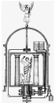
01 / 什么是人工智能
01 / 什么是人工智能
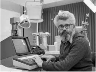
01 / 什么是人工智能
01 / 什么是人工智能
02 / 人类智能
02 / 人类智能
02 / 人类智能
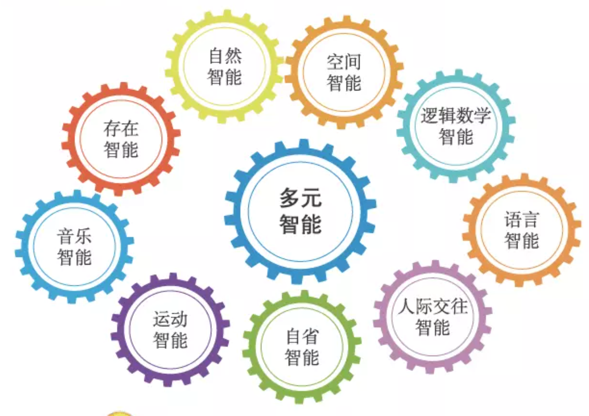
02 / 人类智能
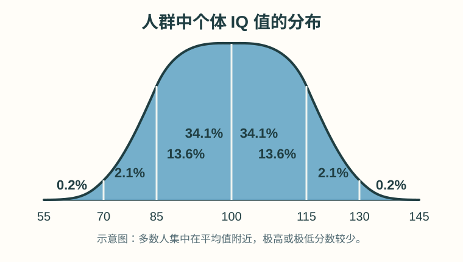
02 / 人类智能
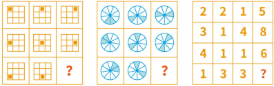
03 / 人类的智能是如何产生的
环境变化促使部分祖先更多在地面活动，直立行走逐渐解放双手。
成为早期人类祖先，脑容量已高于黑猩猩平均水平。
制造石器、使用工具，脑容量和适应能力继续发展。
早期人类开始发展协作捕猎，形成共同目标和共同注意力，并在广泛合作交流中产生集体意识。
人口增长和群体扩大后，人类形成更大规模的社会制度、文化规范、宏观视角与抽象思维。
02 / 人类智能 · 大脑与思考
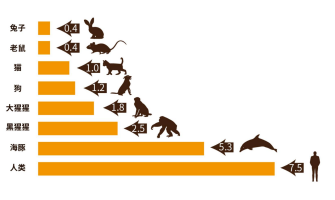
03 / 人类的智能是如何产生的
03 / 人类的智能是如何产生的 · 合作与社会化
03 / 人类的智能是如何产生的 · 合作与社会化
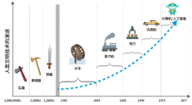
Hauser et al.（2014）：The mystery of language evolution，Frontiers in Psychology。
03 / 人类的智能是如何产生的 · 合作与社会化
Schmandt-Besserat（2014）：The Evolution of Writing，University of Texas。
04 / 人工智能的起源
逻辑是人类理性的思维过程，逻辑学使推理可明确表达和检查，被认为是机器模拟人类思维过程的理论基础。
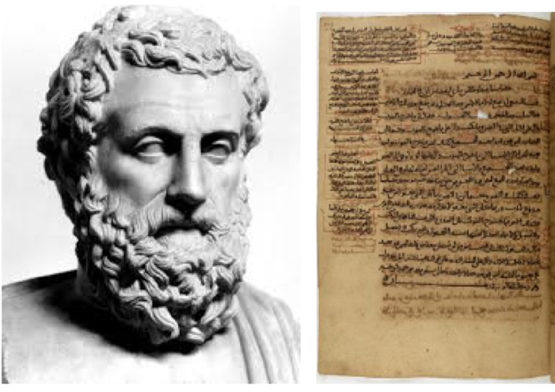
04 / 人工智能的起源
《利维坦》：推理可以理解为符号计算
《组合术》：建立“思想的代数”。把复杂概念分解为简单概念，再像组合字母一样重新组合
《逻辑的数学分析》《思维规律》：把逻辑转化为代数运算
《概念文字》：建立更强的谓词逻辑和形式证明体系
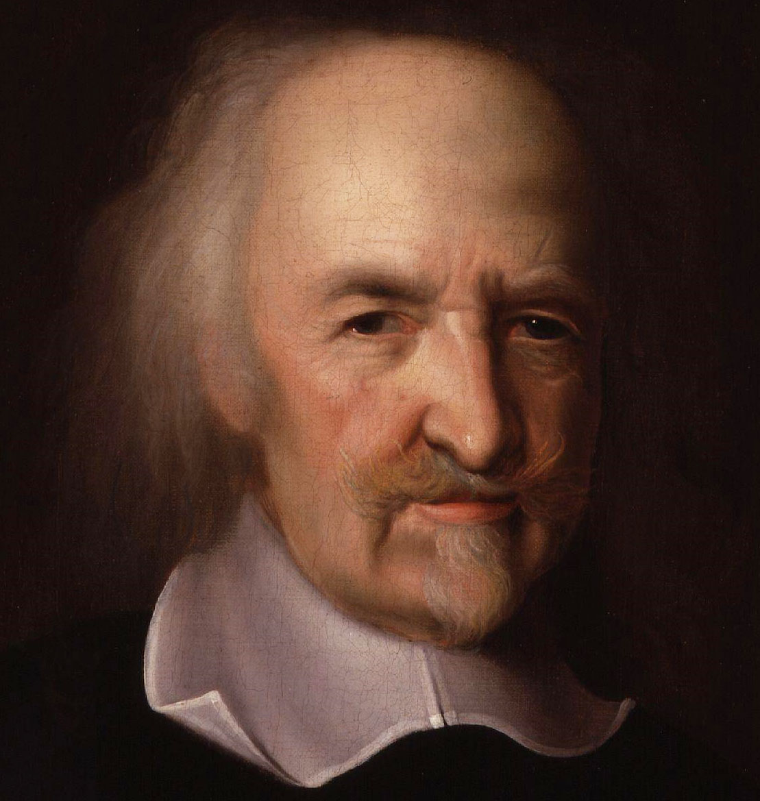
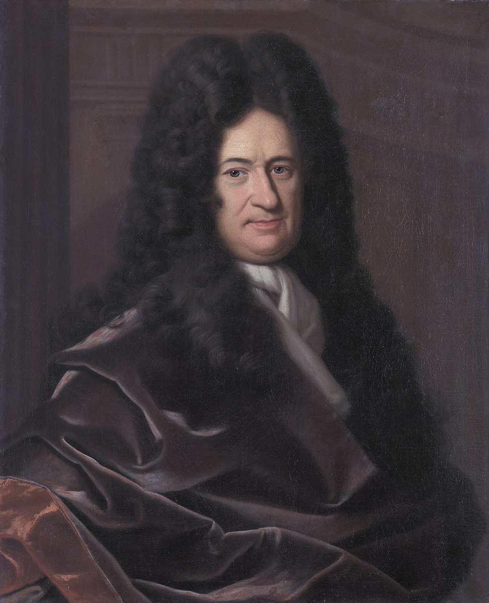
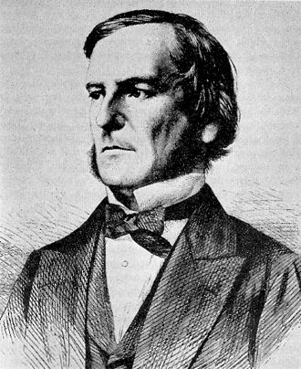
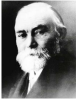
04 / 人工智能的起源
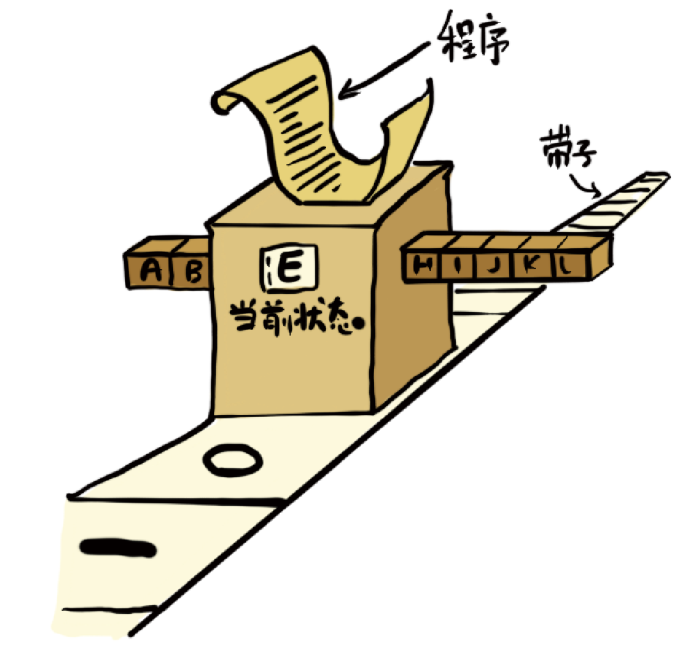
04 / 人工智能的起源
“且、或、非”把真假与条件表达为可操作的规则。
接通 / 断开对应 1 / 0 的物理状态。
把指令保存起来，按顺序或条件执行。
更换程序，而不是重造机器，就能处理新任务。
证明继电器、开关与布尔运算之间的对应，数字电路由此获得理论依据。
同一台机器能够因程序不同而执行不同任务，通用计算成为现实。
1946年，ENIAC公开运行，展示了电子通用数字计算机的高速计算能力，但其程序主要依靠接线、开关和外部控制实现。
1948年6月，曼彻斯特 Baby 首次成功执行了存储在机器内存中的程序，证明程序可以与数据一样作为二进制信息保存和读取。1949年5月，剑桥 EDSAC 进一步把存储程序理念发展为可实际服务于科学计算的通用电子计算机。
04 / 人工智能的起源
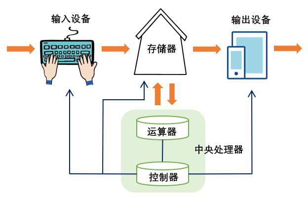
04 / 人工智能的起源
维纳在 MIT 研究随机过程、信号和噪声问题，为后来分析通信信号、过滤噪声和预测系统状态奠定数学基础。
参与二战期间的防空火控研究，探索如何根据雷达信息预测飞机运动，并通过反馈调整火炮方向。
出版《控制论：或关于动物和机器中控制与通信的科学》，正式提出控制论，统一研究动物和机器中的控制、通信与反馈。
W. Grey Walter 研制“海龟”机器人，将维纳的反馈、自主行为思想用于早期机器人实验。
维纳出版《人有人的用处》，进一步讨论自动化、机器学习、通信和人机关系。
维纳的控制论思想对信息论、自动控制的发展起到了关键作用，也是人工智能早期的重要思想源头之一。它强调智能不仅是“推理”，也是一个系统通过感知、反馈和行动不断适应环境的过程。这直接催生的人工智能的行为主义学派。
04 / 人工智能的起源
Shannon 完成硕士论文《继电器与开关电路的符号分析》，证明布尔代数可以用于设计和分析继电器电路，为数字逻辑电路和现代计算机硬件奠定基础。
为后来的电子计算机、数字交换机和通信设备的小型化、可靠化创造条件。
Shannon 发表《通信的数学理论》，建立信息论，提出比特、熵、信道容量等核心概念，奠定数字通信和数据压缩理论基础。
Shannon 发表保密通信相关研究，建立保密通信的数学分析框架，推动现代密码学发展。
Shannon 发表《程序设计的计算机下棋》，将国际象棋决策分解为搜索、局面评估和策略选择问题，是计算机博弈和人工智能搜索的重要先驱。
Claude Shannon是信息论的奠基者，也对计算机科学、人工智能和数字通信的发展产生了深远影响。
05 / 图灵：人工智能之父
少年时期便展现出突出的数学与科学兴趣。
发表可计算数论文，用抽象模型刻画算法计算，为现代计算机奠定理论基础。
师从阿隆佐·丘奇，研究序数逻辑和相对计算，随后回到英国。
在布莱切利公馆参与破解德国 Enigma 密码，并探索高效算法。
把可计算理论进一步带向通用电子计算机的设计实践。
讨论机器怎样学习、表现智能行为；提出以可观察的对话表现组织“机器能否思考”的讨论。
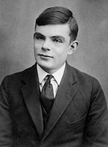
05 / 图灵：人工智能之父
图灵机的关键贡献是提出一种极简抽象模型，用来说明“什么是可计算”。它让算法、程序、机械步骤这些概念获得了严格表达，也为后来的计算机科学、编程语言、复杂性理论和人工智能提供了理论地基。
图灵没有只把机器看成算术工具，而是进一步追问机器能否学习、能否改进自身表现、能否展现类似智能的行为。他在很早的时候就提出了学习机器、儿童机器、训练过程等想法，这些已经接近后来的机器学习思想。
图灵测试的重要性在于，它绕开“机器是否真的有意识”这类难以直接判定的问题，转而关注可观察的语言行为：如果一台机器在对话中表现得足够像人，我们是否应承认它具有某种智能？
05 / 图灵：人工智能之父
图灵奖设立于1966年，由美国计算机协会ACM（Association for Computing Machinery）创立。它的全称是ACM A.M. Turing Award，以英国数学家、逻辑学家、计算机科学先驱艾伦·图灵（Alan M. Turing）命名，通常被称为“计算机科学界的诺贝尔奖”。
06 / 达特茅斯会议
Alan Turing：《Computing Machinery and Intelligence》、图灵测试；英国曼彻斯特大学。把“机器能否思考”转化为可讨论、可检验的行为问题。
Claude Shannon：计算机国际象棋论文；美国贝尔电话实验室。将决策形式化为“搜索树＋评价函数＋选择策略”。
Arthur Samuel：跳棋程序与机器学习探索；美国IBM。把博弈搜索与经验改进结合起来。
Herbert Simon、Allen Newell、J. C. Shaw：Logic Theorist；Simon在卡内基理工学院，Newell、Shaw在RAND Corporation。用树搜索和符号操作寻找证明步骤，是符号主义AI的重要起点。
McCulloch、Pitts：人工神经元逻辑模型；Donald Hebb：赫布学习；Marvin Minsky、Dean Edmonds：1951年SNARC。分别从神经元、学习机制和机器实现探索经验学习。
Norbert Wiener：《Cybernetics》；美国MIT。以控制、通信、反馈和自我调节的统一框架理解机器、动物与人的行为。
这些路线后来在计算工具、形式化思想和机器学习设想中汇合，推动人工智能研究进入新的阶段。
06 / 达特茅斯会议
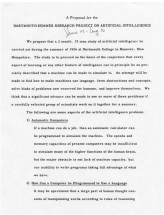
06 / 达特茅斯会议
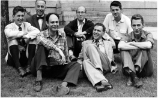
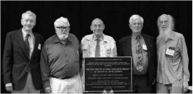
07 / 人工智能的发展历程
基于通用知识：定理证明、ELIZA、感知器等。
基于经验知识：专家系统与反向传播带来短暂回暖。
机器学习方法，特别是深度学习，推动感知和对弈突破。
大模型连接语言模型、多模态能力与广泛应用。
“三起两落”概括人工智能的早期历史。2020 年以来，规模化预训练的大模型推动人工智能进入新的发展阶段。
07 / 人工智能的发展历程
主要特征：以符号主义为主，强调通用问题求解、逻辑推理和知识表示；同时出现早期神经网络探索。
代表方向 / 成果：定理证明、通用问题求解器 GPS、Lisp、ELIZA、SHRDLU、感知器。
评价：AI被正式命名并快速扩张，研究者相信只要给机器足够规则和推理能力，就能实现智能。
主要特征：从“通用智能”转向“领域知识”，强调专家经验、规则库和推理机。
代表方向 / 成果：专家系统、知识工程、MYCIN、XCON；1986年反向传播重新受到重视。
评价：专家系统带来商业化热潮，但维护成本高、知识获取困难，导致热潮较短。
主要特征：以机器学习，特别是深度学习为核心，依赖大数据、GPU算力和神经网络结构改进。
代表方向 / 成果：ImageNet突破、AlexNet、AlphaGo、语音识别、机器翻译、推荐系统。
评价：AI从实验室走向大规模产业应用，在感知、对弈、预测和模式识别任务上取得突破。
主要特征：以大规模预训练模型为核心，语言模型、多模态模型、代码模型和智能体能力快速发展。
代表方向 / 成果：GPT系列、Transformer大模型、多模态模型、生成式AI、AI Agent。
评价：AI从“专用模型”走向“通用基础模型”，开始成为知识生产、软件开发、创作和决策辅助的基础设施。
07 / 人工智能的发展历程
人工智能的第一次兴起通常从1956年达特茅斯会议算起。研究者相信，人的智能可以被拆解成符号、规则、搜索和推理过程，并写成程序让机器表现出智能。
这一时期的主流路线是符号主义人工智能，研究集中在定理证明、问题求解、棋类搜索、自然语言对话和知识表示等方向。
Newell、Simon、Shaw；尝试用统一方法解决不同问题，体现早期“通用智能”的理想。
John McCarthy，MIT；成为早期AI研究最重要的编程语言之一。
Frank Rosenblatt，康奈尔航空实验室；早期神经网络模型，展示机器可以通过训练进行模式识别。
Joseph Weizenbaum，MIT；早期自然语言对话程序，模拟心理咨询式对话。
Terry Winograd，MIT；在“积木世界”中理解语言、执行命令，代表早期符号AI高峰。
07 / 人工智能的发展历程
第一次兴起也很快遇到瓶颈。早期系统通常只能在非常封闭、简化的环境中表现良好。一旦进入真实世界，问题规模会迅速膨胀，规则难以穷尽，常识难以编码，计算资源也远远不够。
Marvin Minsky 和 Seymour Papert 在 1969年 出版《Perceptrons》。这本书系统分析了早期神经网络，尤其是单层感知器的能力边界。
符号主义时代没有实现通用智能，但留下了极其重要的基础：符号推理、搜索、知识表示、编程语言、神经网络雏形，以及“机器可以表现出智能行为”这一研究信念。
07 / 人工智能的发展历程
时间：1970年代研发，1980年代影响扩大
专家 / 机构：Edward Shortliffe；Stanford University
意义：经典医疗专家系统，用规则推理辅助细菌感染诊断和抗生素推荐。
时间：1978起，1980年代商业成功
专家 / 机构：John McDermott；Carnegie Mellon University、DEC
意义：专家系统商业化代表，帮助 DEC 自动配置 VAX 计算机订单。
时间：1980年代
专家 / 机构：Edward Feigenbaum；Stanford University
意义：提出并推动“知识工程”思想，强调把专家经验系统化为可推理的知识库。
时间：1986
专家 / 机构：David Rumelhart、Geoffrey Hinton、Ronald Williams；UC San Diego、Carnegie Mellon University等
意义：重新推动多层神经网络训练，为后来深度学习兴起埋下基础。
07 / 人工智能的发展历程
这一阶段以机器学习，尤其是深度学习为核心。互联网积累了海量数据，GPU提供了高效并行计算能力，神经网络结构和训练算法也不断改进。AI开始从依赖人工编写规则，转向从数据中自动学习规律。
代表事件：AlexNet在ImageNet竞赛中大幅领先。
主要意义：深度卷积神经网络在图像识别领域取得突破。
代表事件：语音识别、机器翻译快速提升。
主要意义：深度学习开始大规模进入互联网产品。
代表事件：AlphaGo击败李世石。
主要意义：深度学习与强化学习在复杂决策任务上取得突破。
代表事件：推荐系统、广告预测、计算机视觉广泛应用。
主要意义：AI从实验室技术转变为大规模产业基础设施。
代表事件：Transformer和预训练模型兴起。
主要意义：为后来的大语言模型奠定技术基础。
07 / 人工智能的发展历程
这一阶段以大规模预训练模型为核心，人工智能从面向单一任务的专用模型，逐步转向能够支持多种任务的通用基础模型。模型通过在海量文本、代码、图像、音频和视频数据上进行预训练，学习语言结构、知识关系以及一定的推理和生成能力。
代表事件：Transformer提出。
主要意义：以注意力机制提升长文本建模和并行训练能力。
代表事件：BERT、GPT-2、GPT-3等预训练模型发展。
主要意义：预训练加微调成为主流范式。
代表事件：大规模语言模型和代码模型快速发展。
主要意义：模型开始具备跨任务迁移能力。
代表事件：ChatGPT发布，生成式AI受到广泛关注。
主要意义：大模型进入公众和办公场景。
代表事件：GPT-4级模型、多模态模型、开源大模型持续发展。
主要意义：语言、视觉、语音和代码能力逐渐融合。
代表事件：AI Agent、工具调用和工作流自动化发展。
主要意义：模型开始从“回答问题”走向“执行任务”。
08 / 让人惊讶的AI
围棋决策、视觉图像、语音语言、机器人、AI for Science，这些看似分散的方向，正在展示同一件事：AI 已经开始解决真实世界的问题。
它能看见和生成。人脸识别、图像理解、图像编辑、DALL-E 式图像生成，让图像既可以成为输入，也可以成为输出。
它能听见和表达。语音识别、语音合成、数字人、ChatGPT 与 GPT-4o，让人们可以用自然语言提出问题、获得回答，并借助 AI 完成写作、创作、翻译、总结和交流。
它也正在从“回答问题”走向“采取行动”。机器人、智能体和科学发现系统，让 AI 不只停留在屏幕里，而是开始操作工具、规划步骤、探索未知，甚至参与新材料、新药物和新理论的发现。
08 / 让人惊讶的AI
围棋决策、视觉图像、语音语言、机器人与 AI for Science，共同展示 AI 解决真实问题的能力。
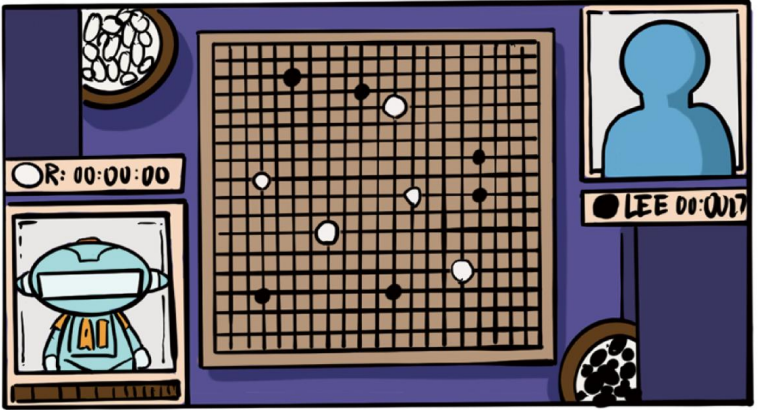
AlphaGo 在围棋对弈中击败人类顶尖棋手。
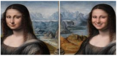
机器可理解、编辑并生成图像内容。
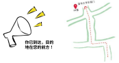
语音合成与识别进入导航、报警等场景。
ChatGPT 展示了对话、写作与代码辅助能力。
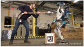
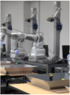
机器人开始保持平衡、学习抓取并操作环境。
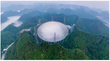
AI 参与天文数据分析与蛋白质结构预测。
09 / 人工智能风险
AI 风险主要集中在事实可靠性、偏见与公平、虚假信息、透明度不足、评估体系滞后、就业冲击、隐私保护、监管滞后、公众信任下降以及资源和权力集中等方面。
AI 可能生成错误、虚构或误导性内容，即“幻觉”问题。
模型可能延续或放大训练数据中的性别、种族、地域、职业等偏见。
生成式 AI 降低了制造假新闻、假图片、假视频和误导性内容的成本。
前沿模型的训练数据、参数、评估方法和决策逻辑往往披露有限。
现有基准测试和风险评估方法难以及时跟上 AI 能力发展。
AI 可能替代部分重复性、标准化或初级知识工作，改变岗位结构。
用户数据、训练数据和行为数据可能被过度收集、泄露或不当使用。
AI 技术扩散速度快于法律、政策和治理机制的建设速度。
人们对 AI 公司的伦理行为、数据保护和系统公平性信心不足。
算力、数据、资本和模型能力集中在少数大公司或国家手中。
第二篇 / 人工智能基础
从知识表示到大模型，理解人工智能如何表示知识、从数据中学习，并通过神经网络形成复杂能力。
10 / 基于知识的人工智能
如果有人能读遍古今中外所有书籍、文献，岂不是会变得十分“聪明”？同理，若能将各种知识存入机器的“大脑”，它也会展现出一定程度的智能。这种方法称为“基于知识的智能”。
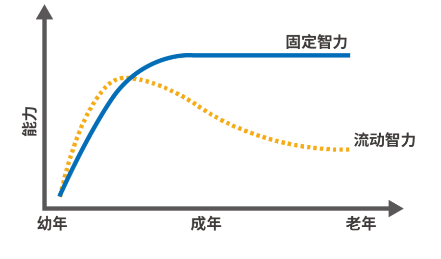
10.1 / 基于通用知识的人工智能
通用知识的内涵：许多科学体系都以少量共同基础组织知识：数学以公理、定义和推理规则为起点；物理学等自然科学则以基本定律、模型假设和测量约束为基础，再推导或解释大量具体问题。
定理证明之所以属于通用知识路线，是因为公理、定义和推理规则对同一形式系统中的所有问题都适用。机器把它们表示为符号、公式和规则库，再由推理引擎逐步生成可检查的证明链。
早期人机对弈把棋盘、合法走法、轮次和胜负条件写成所有对局共享的公共规则，而非某位棋手的个体经验。机器将局面表示为状态、走子表示为状态转移，并在规则允许的候选行动中搜索方案。
知识如何给到机器：先把基础知识写成机器可处理的表示——公理、定律、定义、棋规或约束；再配备推理、搜索或验证程序。机器并非“理解”自然语言式的知识说明，而是在明确表示和规则允许的范围内运算、搜索并给出可检查的结论。
10.2 / 基于经验知识的人工智能
经验知识是建立在基础规律之上，通过实践获得的总结。例如，医生的看病经验、工人的维修技能。
IF 条件 THEN 结论／行动匹配事实与规则把医生诊断、维修步骤等经验写成可执行规则。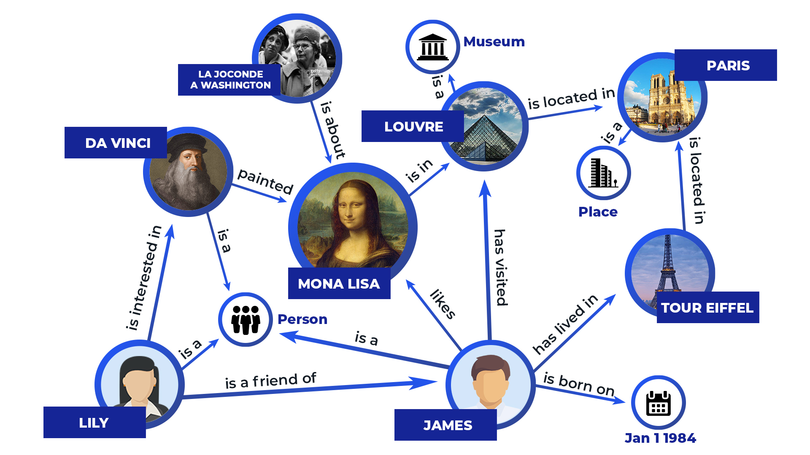
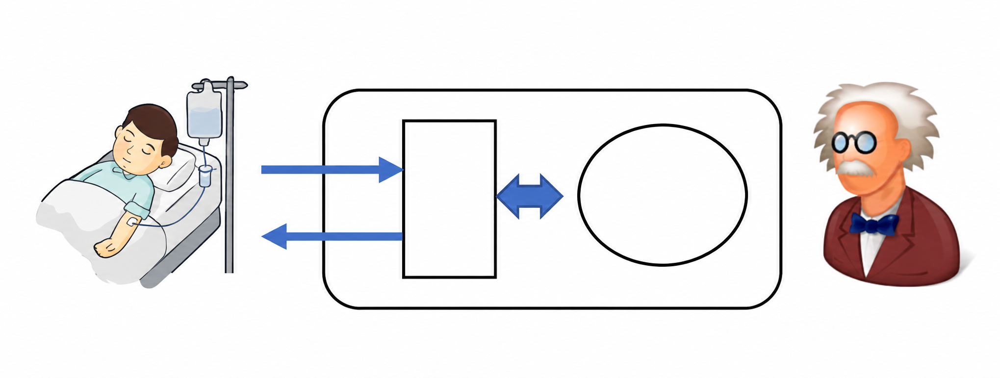
患者推理引擎知识库领域专家10 / 基于知识的人工智能
基于知识的人工智能方法依然具有非常重要的地位。特别是在数据稀缺的领域，没有大量数据可供学习，只能依靠人为知识；此外，在医疗、法律等需要严格控制决策风险的领域，基于知识的方法因其较高可解释性和可控性，依然备受瞩目。
公理、公式、程序规范与安全约束，仍是可靠推理的基础。大模型可提出候选方案，形式规则与验证器负责检查正确性。
其价值不只是存放事实，更在于组织实体关系、数据来源与结构。GraphRAG 将图谱、检索和生成结合，服务跨文档关联与全局概览。
它更适合作为规则、流程、约束与责任层：模型负责交互和建议，规则引擎、验证器与专家审核负责风险控制。
RAG补充最新、私有、可引用的文本证据；知识图谱支持关系查询与多跳关联；规则系统约束决策过程并提供可审计的结论链。
图谱构建和维护有成本，规则可能覆盖不足或彼此冲突，检索也可能取得错误证据。研究重点已转向评价、更新、验证与协调多种知识来源。
主流判断：大模型并没有取代基于知识的方法。参数学习提供广泛的模式能力；通用知识提供规则与可验证约束；知识图谱组织关系与来源；专家系统提供流程、解释和责任边界。当前人工智能的重要方向，是让这些能力在同一系统中协同工作。
参考文献：LLM 与知识图谱 · AlphaGeometry · Microsoft GraphRAG · 神经符号 AI · RAG 与准确性
11 / 基于学习的人工智能
1959 年，IBM 的亚瑟·塞缪尔发表跳棋学习研究，直接使用“机器学习”一词。他保留棋规、搜索和胜负目标，但不把局面评价与下棋策略全部预先写死，而是让程序通过对局经验改进它们。
塞缪尔的程序不是从零学习棋规。人给定棋盘、合法走法、胜负目标、搜索框架及一组候选局面特征；程序在对局后，以更深搜索回传的后续评价修正先前判断，调整特征权重，必要时替换不重要的特征。
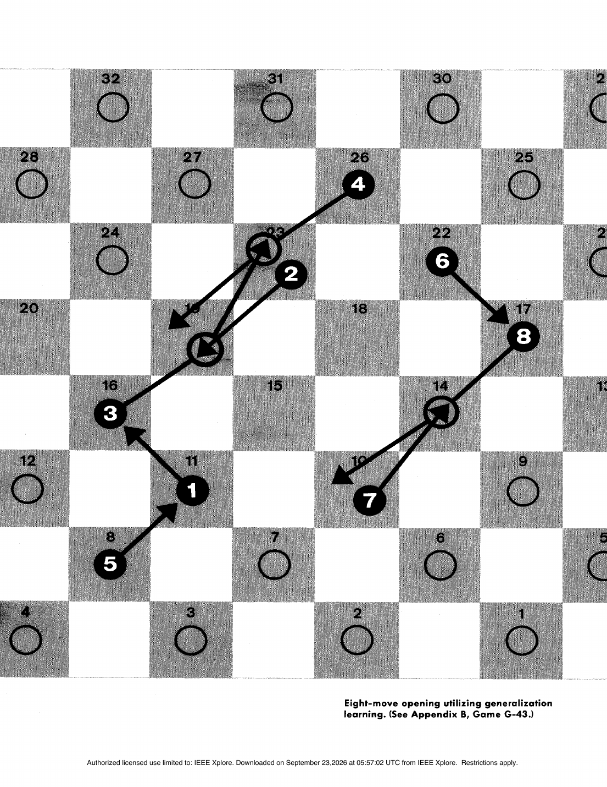
1901—1990
美国计算机学家
IBM 研究人员
这是在规则约束下、利用反馈改进决策的早期强化学习先驱。ACM 在授予 Barto 与 Sutton 2024 年图灵奖的说明中，亦将塞缪尔的自我对弈跳棋程序列为这一脉络的早期工作。
如何理解 learning：规则定义“能怎样下”，学习根据经验改进“应当怎样下”。它在算法思想上接近后来的价值函数学习与强化学习；从系统视角看，则构成“目标—反馈—修正—再行动”的控制闭环。
11 / 基于学习的人工智能
机器学习是利用恰当的算法，从数据中获取经验，对基于知识设计的初始模型进行改进，从而更有效地实现任务目标的方法。
基于知识的方法需要对机器行为的所有细节进行设计和编程，而机器学习则截然不同。它不直接规定机器如何执行任务，而只需明确任务目标，让机器通过自主学习获得实现目标的技能。
要完成什么任务，以什么标准衡量效果。
把输入映射为输出的可调整结构。
根据数据更新模型参数的具体方法。
提供经验的样例、反馈或观测记录。
对任务、特征、结构与约束的先验设计。
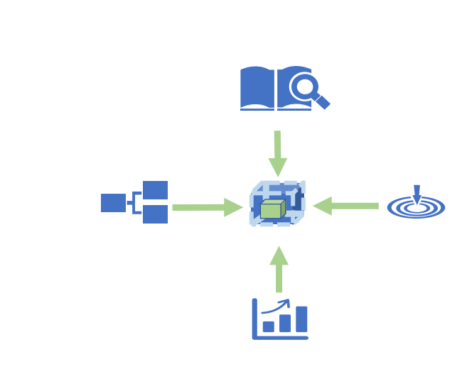
知识 算法 模型 目标 数据12 / 机器学习基本流程
构造一个机器学习系统主要包括四个阶段：模型设计、模型训练、模型测试和模型选择。它们构成一个可反复迭代的过程，而不是只执行一次的线性步骤。
明确任务、输入输出、特征、模型结构与评价指标。
利用训练数据调整模型参数，使预测结果逐步接近目标。
用未参与训练的数据检查泛化效果，识别误差与局限。
综合准确性、稳健性、速度和资源开销，选择适合任务的方案。
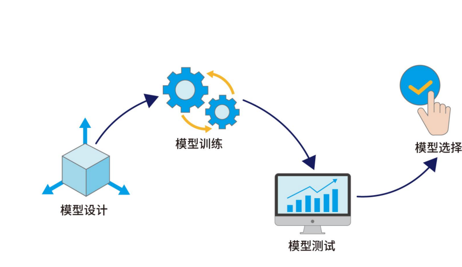
关键认识：训练集上的表现好，并不保证系统能处理新数据；因此，测试与模型选择是把“能学到”变成“能可靠使用”的必要环节。
12 / 机器学习基本流程
对于一个机器学习任务，比如识别“苹果”还是“桔子”，我们需要设计一个模型来实现这一分类。
收集水果图片或测量记录，并用颜色、大小等特征表示每个样例；给苹果标记 T=1，给桔子标记 T=0。
模型输出 Y=A×颜色+B×大小+C。
Y 是模型的分类得分，A、B、C 是需要从数据中学习的参数。
比较预测 Y 与目标 T，构造误差或目标函数 L；不断调整 A、B、C，使 L 逐步变小。
训练后的模型在“颜色—大小”平面上形成一条分界线，把新水果归入更可能的类别。
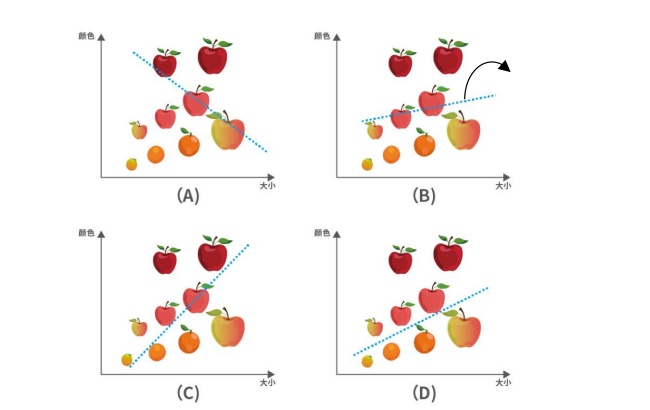
12 / 机器学习基本流程
12 / 机器学习基本流程
当前 B=0.80、C=-0.30。
大桔子预测 Y₀=0.68，目标 T=0。
所以 L≈0.231，误差较大，就像站在山坡较高处。
本例中 ∂L/∂B≈0.578、∂L/∂C=0.68。
B 的影响要乘以大小 0.85：0.68×0.85≈0.578。
C 直接影响整体分数：0.68×1=0.68。
两者都为正，所以 B、C 往小调。
用 B←0.80−η×0.578、C←−0.30−η×0.68。
步长太大可能越过谷底，步长太小则下降很慢。
多轮后得到 B=0.50、C=-0.40。
B、C 变小后，大桔子的 Y 从 0.68 向目标 0 靠近。
L=½(Y-T)² 就会减小并接近 0。
反复对许多水果样本更新，分类边界逐步变合适，分类准确度更高。
12 / 机器学习基本流程
由梯度下降得到最小误差、B 和 C；代入 Y=0.5，求得分类面：颜色≈0.47 + 0.18×大小。
① 数据：水果的颜色、大小，以及标签；颜色和大小是输入特征，苹果标签为 T=1，桔子标签为 T=0。
② 模型：Y=A×颜色+B×大小+C，其中 A、B、C 是需要学习的参数。
③ 误差：比较模型输出 Y 与真实标签 T：L=½(Y−T)²。
④ 优化：根据误差调整 B、C，通过梯度下降逐步减小 L。
根据优化结果确定分类方法：以 Y=0.5 为边界：Y≥0.5 判为苹果，Y<0.5 判为桔子。
⑤ 泛化：将训练得到的模型用于判断训练中没有见过的新苹果和桔子。
12 / 机器学习基本流程
模型测试不是再看一遍训练样本，而是用一批训练时没有见过的新样本，检查模型能不能把学到的规律推广到真实任务中。
训练集用来调整模型参数；测试集只在训练完成后使用，像考试题，不能提前背答案。
如果模型只记住训练样本，训练时分得很准，遇到新水果却分错，就说明它没有真正学会规律。
复杂模型可能迁就训练集中的特殊样本。比如只为一只“个头大、颜色偏黄”的苹果弯折边界，反而把新桔子错分成苹果。
比较模型在独立测试集上的表现；测试集表现相近时，优先选择更简单、更稳定的模型，这就是奥卡姆剃刀准则。
12 / 机器学习基本流程
同一组水果数据，可以得到完全不同的分类边界。简单边界学习的是整体规律；过于复杂的边界可能只记住训练样本。
小苹果和小桔子用于训练。模型若只追求训练集100%正确，可以加入二次项：Y=A×颜色+B×大小+D×颜色²+E×大小²+C，使边界弯曲并贴近训练样本。
大苹果和大桔子没有参与训练。二次曲线可能把新的大桔子错分为苹果。
训练集准确率高，测试集准确率低，说明模型记住了样本，却没有学会可以推广的规律。
13 / 学习方法
机器学习方法可以按“学习时得到什么反馈”来理解：有明确答案、有数据但无答案，或通过行动获得奖惩。
有带答案的样本，学习输入与答案之间的对应关系。
没有预先给出的答案，从数据中发现结构和相似性。
通过行动与环境互动，根据奖励或惩罚改进策略。
区分关键：监督学习看“答案”，无监督学习找“结构”，强化学习依据“行动后果”改进策略。
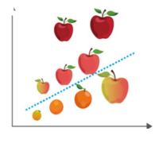
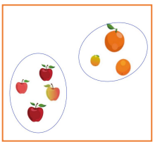
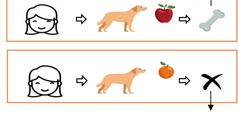
13 / 学习方法
监督学习像“带答案练习”：先给训练样本标出正确类别，再让模型从特征与标签的对应关系中学习。
输入特征：颜色、大小
标签：苹果或桔子
用已标注样本调整模型参数。
检验模型能否正确判断未见过的水果。
13 / 学习方法 · 02
无监督学习面对的是没有预先标注答案的数据。它不直接预测给定类别，而是从样本之间的相似性和分布中寻找结构。
以水果为例，即使没有人告诉模型哪些是苹果、哪些是桔子，模型仍可比较颜色、大小等特征，把相似样本分成若干组。这类任务称为聚类。
聚类结果取决于样本特征和相似性定义。模型找到的是数据中的分组结构；人还需要结合任务判断这些组是否有实际意义。
典型应用：顾客分群、相似内容归类、异常发现。
13 / 学习方法 · 03
强化学习不为每一步行动预先提供标准答案。学习者与环境反复互动，根据行动带来的奖励或惩罚调整策略，目标是获得更好的长期结果。
循环持续进行，学习者逐渐增加能带来较高累计奖励的行动。
小狗选择目标水果后得到奖励，选错时没有奖励。它并没有收到“每一步该怎么做”的标签，而是从行动结果中逐渐学会更合适的选择。
典型任务：棋类游戏、机器人控制、路径规划。
14 / 学习策略
监督学习、无监督学习和强化学习区分的是机器学习时获得什么反馈；符号、贝叶斯、连接和进化仿生四种学派区分的是机器如何表示规律、如何改进模型——分别侧重规则、概率关系、连接权重和候选方案的选择与演化，因此同一种学习方法也可以用不同学派的思路实现。
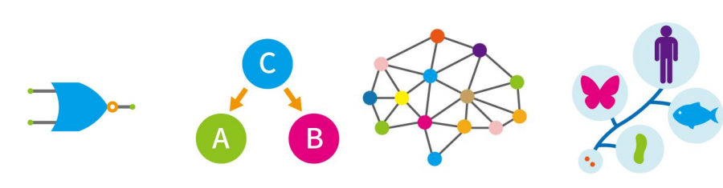
内部表示 人能读懂的条件与规则。
如何改进 从例子归纳规则，或由人检查、修订。
怎样分类 看样本是否满足某条规则。
内部表示 类别、特征及其概率关系。
如何改进 用数据估计概率；结合先验与新证据更新判断。
怎样分类 比较样本属于各类别的后验概率。
内部表示 多层神经元及连接权重；规律分布在网络中。
如何改进 比较预测与标签的误差，调整大量权重。
怎样分类 颜色、大小经网络计算，产生类别分数。
内部表示 一群编码后的候选方案，如多组分类器参数。
如何改进 按表现选择，再交叉、变异，形成新一代。
怎样分类 用评分较高的候选分类器作判断。
14 / 学习策略
同样观察云量和湿度，预测是否下雨；两种方法都能利用数据改进预测，也都可以输出降雨概率。
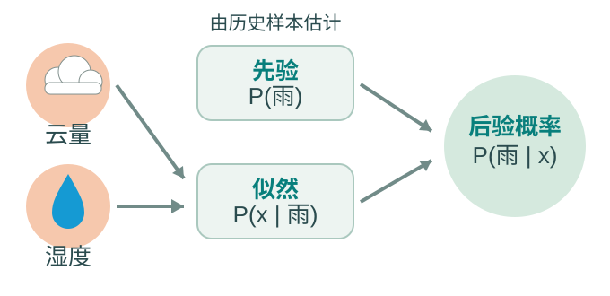
学什么：估计先验与观测条件下的概率关系；这里 x=(云量、湿度)。
怎样更新：有新观测时，按概率关系计算后验；有新数据时，可重新估计这些概率。
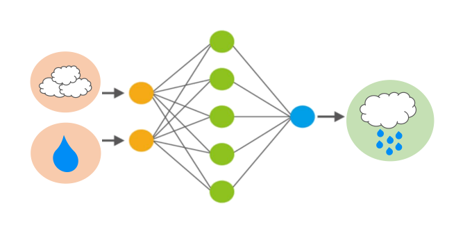
学什么：调整连接权重，让云量、湿度与降雨预测之间形成有效映射。
怎样更新：比较预测概率和真实结果，利用误差逐步调整权重。
区别与联系：两者面对同一观测、都能预测降雨；贝叶斯方法明确表示概率关系并据此推断，神经网络把规律分布在连接权重中并根据误差训练。
两者结合成贝叶斯神经网络时：先验为权重 W 提供起点，可来自经验或已有任务；训练数据更新权重的后验，更多可靠数据通常让判断更受证据约束；精确后验难求时，变分推断可采用权重独立的近似分布，MCMC 则通过抽样估计。
14 / 学习策略
进化仿生学派认为，人类的智能是生物长期进化的结果，包括以交叉繁衍和个体变异为基础的繁衍过程和以自然选择为基础的优胜劣汰机制。模拟这一进化过程可以实现类人的智能。
遗传算法是进化仿生学派的代表性算法。这一算法模拟生物进化过程来对模型进行学习。在学习过程中，算法不断生成新的模型并保留那些优质模型，从而逐渐提高模型质量。
把方案写成一组可操作的参数。
用适应度衡量每种方案表现。
让表现较好的方案更可能留下。
组合部分方案，并随机改动。
进化仿生学派并非一种统一算法：遗传算法、进化策略和遗传编程都通过评价、选择与变化搜索方案，但编码和更新方式不同。
参考：Holland（1975） · Koza（1992） · NEAT（2002） · 质量多样性（2016） · 结构搜索综述（2026） · 大模型与进化计算综述（2025/2026）
15 / 人工神经元网络
真实神经元接收来自突触的信号；有些信号促进发放，有些抑制发放。神经元整合这些影响，达到一定条件后产生动作电位。1943年的模型抽取了其中适合研究逻辑计算的部分。
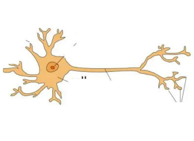
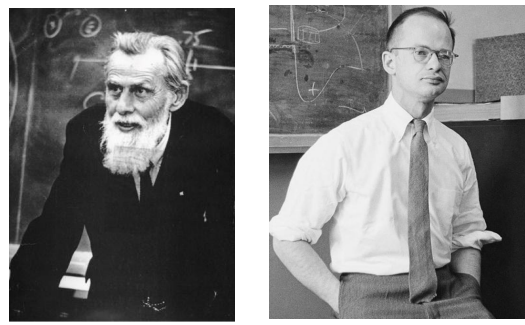
| 生物现象 | 模型中的简化 |
|---|---|
| 兴奋性突触输入 | 离散输入信号，促进达到阈值 |
| 多个输入共同作用 | 按规则汇总或组合 |
| 达到发放条件 | 达到阈值输出 1，否则输出 0 |
| 抑制作用 | 抑制输入可阻止输出 |
这是一种建模选择：没有模拟离子通道、连续膜电位、脉冲时间、神经递质或突触可塑性。
规则均为：达到阈值输出 1，否则输出 0。改变的是阈值，不是单元结构；0、1 是模型信号，不是神经元的全部生理状态。
| x₁ | x₂ | 与 | 或 |
|---|---|---|---|
| 0 | 0 | 0 | 0 |
| 0 | 1 | 0 | 1 |
| 1 | 0 | 0 | 1 |
| 1 | 1 | 1 | 1 |
15 / 人工神经元网络
感知器把输入加权后作判断，权重可根据带标签样本调整。单层形式只能用一条直线划分二维输入，XOR（异或）让我们直接看到它的能力边界。
令 z=0，得 w₁x₁+w₂x₂+b=0，这是输入平面上的分类直线。w₁、w₂决定直线方向，b使直线平移。
y=1：(x₁,x₂)=(0,1)、(1,0)
y=0：(x₁,x₂)=(0,0)、(1,1)
图中横轴是 x₁、纵轴是 x₂，点旁数字表示对应的目标 y。同类点在对角位置，任何一条直线都不能把两类完全分开。
继续调整权重也无济于事：单层边界始终是直线。XOR 可写作 (x₁∧¬x₂)∨(¬x₁∧x₂)，提示隐藏层先组合中间特征，再由输出层合并。
康奈尔航空实验室研究者；先有技术报告，后发表感知器论文。IBM 704 演示与 Mark I 专用硬件是不同阶段。
系统分析单层感知器的局限，影响研究关注方向；没有证明多层网络都不能学习。
背景：Hebb，1949 · Rosenblatt，1958 · 康奈尔史料 · Minsky & Papert，1969
15 / 人工神经元网络
隐藏层把输入组合成中间特征，输出层再整合这些特征。观察 XOR 输入经过隐藏层映射后，怎样从不可线性分离变为可分。
| 输入 x₁x₂ | 00 | 01 | 10 | 11 |
|---|---|---|---|---|
| h₁ | 0 | 0 | 1 | 0 |
| h₂ | 0 | 1 | 0 | 0 |
15 / 人工神经元网络
对照两段 XOR 代码，先认识五件事：张量、模型、损失、自动求梯度和参数更新。
import tensorflow as tf
tf.keras.backend.set_floatx("float64")
# ① 张量：x 有4行样本、每行2个输入 x₁、x₂
x = tf.constant([[0.,0.],[0.,1.],[1.,0.],[1.,1.]])
# target 每行1个正确答案：00→0，01→1，10→1，11→0
target = tf.constant([[0.],[1.],[1.],[0.]])
# ② 模型参数：W、v 是连接权重；b 是偏置
W = tf.Variable([[2.,-2.],[-2.,2.]]) # 2输入→2隐藏
b_hidden = tf.Variable([-1.,-1.])
v = tf.Variable([[3.],[3.]]) # 2隐藏→1输出
b_output = tf.Variable([-2.5])
parameters = [W, b_hidden, v, b_output]
optimizer = tf.keras.optimizers.Adam(learning_rate=0.03)
for epoch in range(1, 301):
with tf.GradientTape() as tape:
hidden = tf.sigmoid(tf.matmul(x,W)+b_hidden) # 2个隐藏值
logits = tf.matmul(hidden,v)+b_output # 1个原始输出分数
# ③ 损失：比较原始分数 logits 与正确答案 target
loss = tf.reduce_mean(
tf.nn.sigmoid_cross_entropy_with_logits(
labels=target, logits=logits))
# ④ 自动求梯度：每个参数稍变会怎样影响损失？
gradients = tape.gradient(loss, parameters)
# ⑤ 更新参数：Adam 按梯度改变 W、b、v
optimizer.apply_gradients(zip(gradients, parameters))
hidden = tf.sigmoid(tf.matmul(x,W)+b_hidden)
prob = tf.sigmoid(tf.matmul(hidden,v)+b_output) # 0～1概率
print(tf.cast(prob >= 0.5, tf.int32).numpy().ravel())import torch
import torch.nn.functional as F
torch.set_default_dtype(torch.float64)
# ① 张量：x 有4行样本、每行2个输入 x₁、x₂
x = torch.tensor([[0.,0.],[0.,1.],[1.,0.],[1.,1.]])
# target 每行1个正确答案：00→0，01→1，10→1，11→0
target = torch.tensor([[0.],[1.],[1.],[0.]])
# ② 模型参数：Parameter 表示这些数可由训练更新
W = torch.nn.Parameter(torch.tensor([[2.,-2.],[-2.,2.]]))
b_hidden = torch.nn.Parameter(torch.tensor([-1.,-1.]))
v = torch.nn.Parameter(torch.tensor([[3.],[3.]]))
b_output = torch.nn.Parameter(torch.tensor([-2.5]))
parameters = [W, b_hidden, v, b_output]
optimizer = torch.optim.Adam(parameters, lr=0.03)
for epoch in range(1, 301):
optimizer.zero_grad(set_to_none=True) # 清旧梯度
hidden = torch.sigmoid(x @ W + b_hidden) # 2个隐藏值
logits = hidden @ v + b_output # 1个原始输出分数
# ③ 损失：比较原始分数 logits 与正确答案 target
loss = F.binary_cross_entropy_with_logits(
logits, target)
# ④ 自动求梯度：把各参数的梯度写入 .grad
loss.backward()
# ⑤ 更新参数：Adam 读取梯度并改变参数
optimizer.step()
with torch.no_grad():
hidden = torch.sigmoid(x @ W + b_hidden)
prob = torch.sigmoid(hidden @ v + b_output) # 0～1概率
print((prob >= 0.5).int().flatten().tolist())共同设置 2个输入 → 2个 sigmoid 隐藏单元 → 1个输出；四个 XOR 样本整批训练，二元交叉熵 + Adam（学习率 0.03），训练 300 轮；输出概率以 0.5 为分类阈值。
输入沿连接权重逐层计算，得到预测。
比较预测与正确标签，衡量当前模型的误差。
反向传播用链式法则求出各层权重对损失的影响。
Adam 依据梯度调整权重；求梯度本身不更新参数。
16 / 典型网络结构
相邻层的单元通常全部连接；隐藏层把输入组合成中间表示，再交给输出层作判断。
核心区别：每条连接有自己的权重；不像 CNN 那样在图像不同位置共享一组卷积核。
16 / 典型网络结构
利用图像的局部结构：每个单元只看邻近区域，同一组卷积核权重在不同位置重复使用。
图上绿色 3×3 小块是一个局部感受野；卷积核移动到别处时复用同一组权重。
16 / 典型网络结构
处理有先后顺序的数据：当前时间步接收新输入，也接收前一步传来的隐藏状态。
16 / 典型网络结构
把输入编码为较紧凑的表示，再尝试重建原输入；训练信号来自输入自身。
四条线的侧重点：MLP 学习多层表示并具备广泛的函数逼近能力；CNN 利用图像的空间局部结构；RNN 借助状态反馈处理序列；AE 通过重建学习数据表示。它们并不互斥，CNN、RNN 和 AE 可包含全连接层，也可彼此结合。
17 / 深度学习
单隐藏层网络在一定条件下、隐藏单元足够多时，已能逼近广泛的连续函数。增加层数可让某些复杂关系更容易表示；含多个隐藏层的网络通常称为深度神经网络，以这类多层模型学习规律的方法称为深度学习。
与单隐藏层网络相比，深度网络有更多中间计算层。每层用可学习的参数处理上一层的结果，训练会同时调整这些参数。
多层组合有机会用较少的中间单元表达某些复杂关系；但层数增加不保证效果提升，还会使优化、算力和过拟合问题更突出。
通用逼近研究说明，满足条件的单隐藏层网络也能逼近广泛的连续函数。它回答“能否表示”，不回答“能否容易学到”。论文
从第15节的“隐藏层如何训练”走到这里，新的问题是：层更多时，怎样稳定地把所有层的参数训练好？
17 / 深度学习
训练仍是“正向预测、计算损失、反向求梯度、优化器更新”，但层数和参数更多，使训练更难。
梯度从输出层逐层传回，过深时可能变得很小或很大；损失曲面也可能有许多不同的区域。数据不足时，还可能只记住训练样本。
“找到更低的训练损失”仍不是终点：要用未参与训练的数据检验模型是否真正学会可推广的规律。
17 / 深度学习
图像网络可能先响应边缘、颜色或纹理，再把局部线索组合成更大的图案，最终为识别任务提供表示。
对颜色变化、边缘或简单纹理作出响应。单看局部模式，通常还不能判断物体类别。
把多个局部线索组合成形状或部件；哪些组合有用，由样本和训练目标共同决定。
表示更大范围的内容，供最终分类或其他任务使用。它不一定能被人准确命名。
2014 年 Zeiler 与 Fergus 的可视化研究帮助观察 CNN 不同层的响应；“由简单到复杂”是常见现象，不是每个网络、每个神经元都遵循的固定规则。研究论文
17 / 深度学习
同一张脸即使位置、大小或颜色有所变化，我们仍希望模型把它们判断为同一个人。
像素会随缩放、移动、光照而改变。训练好的某些特征对这些变化可能更稳定，从而帮助模型识别未见过的图片。
网络结构决定如何组合信息，训练数据展示哪些变化应被视为同一类，损失函数再把预测误差转化为权重更新。
模型没有自动理解“人脸”这个概念；遮挡、角度或训练数据未覆盖的变化仍可能导致错误。抽象表示是否有用，要看新数据上的测试。
秘密不在某个单独的“人脸神经元”，而在许多单元形成的表示能否保留任务相关信息，同时弱化无关变化。
17 / 深度学习
深度学习是机器学习的一类方法。网络结构、数据、计算资源与开放研究共同推动它走向更广泛的任务。
2018 年图灵奖授予 Bengio、Hinton、LeCun，表彰深度网络的概念和工程突破。现代 AI 的发展也依赖数据、计算与共享资源；更大的模型仍需检验可靠性与适用边界。ACM
18 / 深度学习前沿
近年来，深度学习在基础理论、模型结构、训练方法等方面取得了一系列重要成果。这些成果回应了几个实际问题：网络加深后难训练，词与对象难以比较，序列长度与语境不断变化，人工标注成本高，以及怎样生成新样本。
本节依次介绍以下重要技术方向：残差网络、对象嵌入、序列到序列模型、注意力机制、自监督学习，以及生成对抗网络（GAN）和变分自编码器（VAE）。这些知识将在本书的后续章节中继续使用。
18 / 深度学习前沿
为何提出：普通网络直接加深后，训练误差有时反而升高，说明优化变难。跨层连接让信息与梯度更容易传递，帮助新增层学到有用的变换。
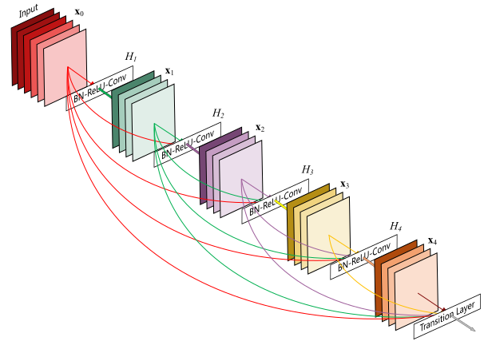
Huang 等，原论文图 1：此前各层特征送往后续层并拼接图中旁路保留 x，主路学习修正量 F(x)，相加后再经激活；若无需修正，F(x) 可接近 0。DenseNet 在密集块内拼接此前特征，让后层直接复用。
18 / 深度学习前沿
为何提出：词的编号不能表示语义远近，照片与录音也难直接比较。嵌入把对象变成可学习、可比较的向量；词向量是嵌入的一种。
18 / 深度学习前沿
为何提出：翻译的输入、输出词数与词序常不同，固定数量的分类输出不适合。编码—解码把“读懂源序列”与“逐步生成目标序列”连接起来。
先把词变成数字向量，再按顺序读 Do、you、like、apple、?。每读一个词，编码器就把新词与此前记住的信息合在一起，更新自己的记录。
多一个词，就多更新一步；词序不同，更新过程也不同。
读完后，编码器把最后的记录交给解码器。图中蓝色向量 c 就是一组表示整句信息的数字，并非每个数字对应一个英文词。
长句和短句都可以用同样数量的数字记录；句子不同，数字的值也不同。
解码器先依据 c 预测“你”，再结合 c 和已写出的“你”预测“喜欢”，接着生成“苹果→吗→?→结束”。
每写一个词，解码器就更新自己的状态，决定下一个词；读到结束标记才停。因此译文不必和英文一样长。训练时用成对的原句与译句，按预测错误调整两个网络。
18 / 深度学习前沿
为何提出：整句挤进一个固定长度向量，长句细节可能丢失。注意力保留各位置的表示，让解码器生成每个译词时重新读取相关原词。
编码器分别保留 Do、you、like、apple、? 的表示。解码器已有“你、喜欢”，正准备预测下一个中文词。
用当前解码状态与各英文位置的表示计算相关分数，再转成总和为 1 的权重。图中 apple 的粗线示意它在本次读取中权重较大。
把各位置的表示乘以权重后相加，得到本步的上下文向量；解码器结合它与当前状态预测“苹果”。生成下一词时重新算权重，这些评分关系通过翻译样本训练学得。
18 / 深度学习前沿
为何提出：“苹果”指水果还是品牌，要看上下文。自注意力让同一句中各位置直接交换信息，缩短远处词之间的联系路径，并便于并行计算。
“你、吃、苹果、吗、?” 先转换为词向量并加入位置线索。“苹果”的含义还需结合上下文。
自注意力让句中每个位置都能利用同一句的其他位置；图中以“苹果”为例。
每个位置的表示经学习得到三类信息：Q 用于查询，K 用于匹配，V 提供被汇总的内容。
“苹果”的 Q 与句中各位置的 K 比较，得到相关分数并转成权重。图中“吃”的粗线示意它贡献较多信息。
将各词的 V 乘以权重后相加，得到“苹果”的更新表示。它带上“吃”等词的线索，帮助后续层判断这里指水果。
其他位置同样更新；换成“苹果手机”，上下文与权重改变，同一个词便有不同表示。
18 / 深度学习前沿
为何提出：图片容易收集，逐张标注却费时费力。自监督从数据本身构造训练目标；图中的拼图让网络在没有“老虎”标签时也能学习特征。
把原图切成九块，再由程序打乱。输入是左侧拼图；程序保存原位置和打乱方式，所以无需人工逐张标注正确排列。
网络读取图块，预测它们的排列。要做好任务，需要利用虎头、身体、纹理与相邻边缘等线索。训练目标是排列关系，并非“老虎”这个类别名。
比较预测排列与正确排列，计算损失，再反向传播并更新参数。学到的图像特征可用于后续分类、检测；拼图只是一种自监督任务，也可以用多视图匹配或遮挡重建来学习。
自监督仍有训练目标和损失；关键是监督信号由数据与程序构造。预训练学到的特征是否有用，要在后续任务中检验。
18 / 深度学习前沿
为何提出：生成一幅新画没有唯一的标准答案，也难手写“像真画”的评分规则。GAN 训练一个判别器，从真实与生成样本中学会评分，再指导生成器。
生成器 G 接收随机向量 z（图中省略），计算得到一幅画作 G(z)。不同 z 可产生不同图像，初始结果通常还不像真实画作。
上路是真实画作，下路是生成画作。判别器 D 学习给真实图像更高的“真实”分数、给生成图像更低的分数；此步只更新 D。
固定 D，用“使生成图像得到更高真实分数”的损失训练 G。梯度经过 D 传到 G，此步只更新 G。交替更新的目标，是让生成样本接近训练数据的分布；训练并不保证收敛。
生成器的反馈来自判别器的损失，而非一张逐像素对应的标准答案。对抗训练可能不稳定，也可能只生成少数类型的图像。
18 / 深度学习前沿
根本区别：AE 学会把输入压缩为编码并重建，却不保证随机取一个编码也能解码出合理样本；VAE 学习可采样的潜在分布，使生成新样本有明确的取样方式。
左侧数字 x 进入编码器 q。常见 VAE 输出潜变量分布的均值 μ 与标准差 σ，表示“这个样本的编码可能落在哪里”，而不只给一个固定点。
取标准正态噪声 ε，逐维计算 z = μ + σ × ε。随机性来自 ε，μ、σ 仍可通过反向传播学习。训练同时约束编码分布接近指定先验，常取标准正态分布。
解码器 p 接收 z，输出重建数字。训练兼顾重建损失与分布差异（KL 项），共同更新 q、p。生成新样本时，可直接从先验采样 z，再经 p 解码，无需先输入一张图片。
AE ↔ VAE：AE 的编码通常是确定的，编码点之间可能有难以解码的“空洞”，主要优化重构误差；VAE 让编码器输出分布，以重构项与 KL 分布约束共同优化变分下界（ELBO），使从先验采样再解码更可行。潜空间较规整是训练目标，生成质量仍需检验。
19 / 深度学习面临的挑战
深度学习已经取得了一系列重大成果，深刻改变了我们对人工智能边界的认知。今天，深度神经网络依然是人工智能领域的重要模型，然而，这一模型的一些弱点也逐渐为人们所认知。
神经网络中包含数量庞大的神经元，这些神经元互相配合，共同得到合理的预测或生成结果。
然而，这些神经元是如何互相配合的，到目前为止还很难厘清。我们从神经网络得到了结果，却往往难以完整解释这一结果是如何得到的。
这就是可解释性问题：能够查看网络的结构和参数，并不等于已经理解它为什么作出某一次判断。
复杂网络内部的计算过程难以理解：为什么得到这个结果？
刻意构造的输入变化可能使模型误判：这个结果是否可靠？
19 / 深度学习面临的挑战
2013年，Szegedy 等研究者发现：给深度神经网络一张图片，对图片进行一些精心构造的微小扰动，就可能使网络的输出发生显著变化。
研究者们进一步发现，对人来说毫无意义的图案，有可能被机器非常自信地识别成某种东西。
左列：人眼看起来难以辨认的图案。
右列：模型认定的类别——企鹅、运货车。
右列实物表示预测类别，不是输入图片。
这些现象说明，人类所看到的世界和机器所看到的世界可能是不同的。机器给出的置信度高，也不等于判断正确。
19 / 深度学习面临的挑战
对抗样本的存在，使深度学习模型面临被攻击的风险。如果不考虑人与机器识别方式的差异，模型在关键应用中的错误可能带来严重后果。
图中，研究者在“停止”标志上添加了一些黑白块，就使识别系统发生误判。攻击不一定只改变图片文件，也可能改变摄像头看到的实物。
研究者还发现，在特定实验条件下，对声音作细微改动，也可能让语音识别引擎输出攻击者指定的文本。
为防范对抗样本攻击，研究者已经进行了大量研究。然而，对抗攻击本身的算法也在改进，如何防范对抗样本带来的风险依然是一个重要的研究课题。
相关研究：物理标志攻击（2017–18） · 语音对抗样本（2018） · 对抗训练（2017–18）
20 / 大模型时代
Transformer 将多头注意力与前馈网络逐层组合，并用于语言模型。
左图的 Multi-head attention：同一句话可并行计算多组关系。
各头合并 → 前馈网络 → 多层处理
续写可能接：“小块”
继续“小林买苹果” 小林路过苹果手机店，却去菜市场买软苹果送给牙疼的奶奶；回家洗净后，切成了……
同一个位置进入多个头；各头分别计算它与可见词元的关联并汇总信息，再将结果拼接、变换。随后前馈网络逐位置加工，残差连接与归一化帮助多层训练。
训练时遮住未来内容，让模型根据此前的词元预测实际下一个词元；用预测误差调整权重。反复读大量文本，模型逐渐学会利用“牙疼”“软一点”“切成了”等上下文。
原版 Transformer 面向机器翻译：编码器读入原句，解码器参考原句逐步生成译文。生成式大模型的任务则是根据已有文本不断预测下一个 token，因此常采用带因果掩码的 Decoder-only 结构。这不是简单删去编码器，而是任务与信息流都发生了变化。2018 年的 GPT 沿这一路线进行语言预训练；随着数据、参数和算力的扩大，大语言模型逐渐发展起来。
从翻译到生成：翻译时解码器通过交叉注意力读原文；GPT 用因果掩码只看前文，不偷看目标词元。Transformer（2017） · GPT（2018）
20 / 大模型时代
翻译、写作、答疑、解释代码……越来越多的任务，可以通过对话交给同一个语言模型。这场变化怎样发生？GPT 最初又是怎样学习的？
把“预测下一个 token”的目标放进可堆叠的 Transformer，先从大量文本中学习。
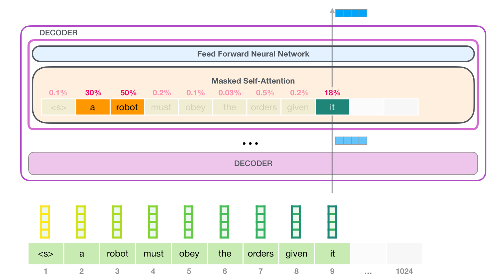
从文字到 token：模型处理的 token 可以是字、词或子词片段；它先转成向量，再结合位置信息进入网络。
20 / 大模型时代
预测下一个 token，为什么也能推理？ 训练可让模型学到事实关联与计算策略；生成中间步骤又能为后续计算提供上下文。但推理能力、知识正确性与回答可信度，需要分别检验。
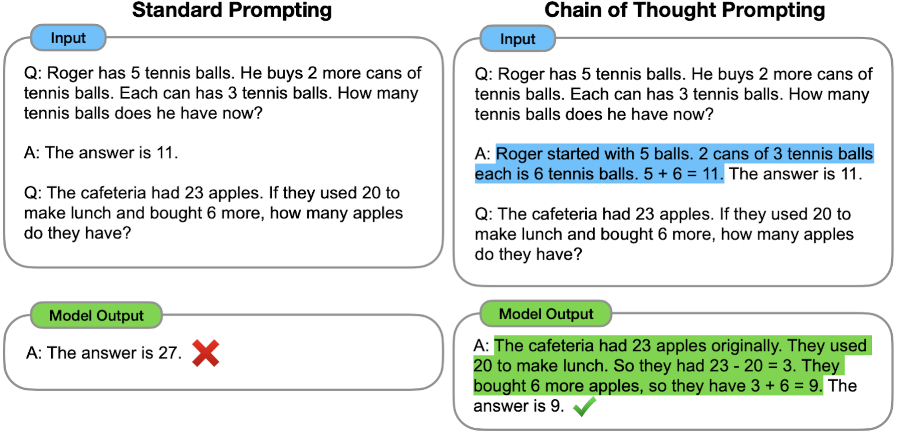
读图：先给一个“问题＋解题步骤”的示例，再让模型解新题。食堂有23个苹果，用掉20个，又买6个；右图算出 23−20＋6＝9，左图直接回答却给出27。
能说明什么？中间步骤可改善部分任务的表现；这张图是实验示例，不保证每次有效。写出的解释也不等于内部计算的完整记录。
读图：问“达拉斯所在州的首府是哪里？”研究在 Claude 3.5 Haiku 中观察到“达拉斯→得州→奥斯汀”的关联；干预中间特征，会改变最终答案。
能说明什么？特定案例显示模型可组合训练中学到的事实。图是研究者追踪的部分内部路径；不代表所有模型、所有问题都如此。
模型可能生成虚构人物经历、文献或事实。上述研究发现，在特定案例中，“熟悉实体”的信号可能错误压过“不知道”的信号，导致编造；这是部分机制的证据，并非幻觉的唯一原因。
内部参数保存训练中学到的关联；检索增强生成（RAG）先查外部资料，再将相关片段送入上下文。检索通常不改模型权重；找错资料、误读或添加无依据内容，仍可能出错。
原图与研究：Google Research · 思维链（2022） · Anthropic · 内部计算与幻觉（2025） · FAIR · RAG（2020）
20 / 大模型时代
从模型到系统 LLM 理解目标、生成内容并选择行动；连接工具后，再加入“执行 → 观察结果 → 决定下一步”的循环，就能构建围绕目标工作的智能体。
LLM 理解与决策，工具执行操作；两者根据反馈循环协作。模型生成调用请求，本身并不直接读写文件。
当前进展：研究正从单次工具调用，走向长程任务、交互训练与多智能体协作；通过环境反馈和结果验证提高完成率，但错误累积、协作成本与可靠性仍是关键挑战。
按需加载的操作规范、模板与脚本，指导 Agent 怎样组合和使用工具。例如“先核对史实，再检查排版”。规范进入模型上下文，脚本通过工具执行；加载 Skill 通常不改变模型权重。
它组织模型与工具的调用，并利用任务清单、进度记录、环境脚本和版本历史保存工作状态。每轮让 Agent 先恢复现场，再完成一项任务、实际验证并留下交接记录，从而跨多个上下文窗口持续推进。其效果仍取决于模型能力、工具反馈和检查质量。
图示依据：Anthropic · Building effective agents（2024） · 补充：Agent Skills · Harness
20 / 大模型时代
从“像素接龙”到扩散生成 一些早期 Transformer 图像模型像文字接龙一样，按顺序预测下一个像素。扩散模型换了一种思路：自然图像并非任意像素的拼接，可把它们想成集中在图中黄色曲面附近；随机噪声远离这些区域。模型学习逐步去噪，让新噪声走向“合理图像”区域，生成一张新图。黄色曲面只是高维图像分布的简化示意；同一思路也可生成声音与语音。
白噪声 → 多次更新 → 可播放的声音波形
对真实图像或声音加入已知噪声。网络看到被扰乱的内容和噪声程度，学习如何逐步更新。
训练好后，从新的随机噪声出发，反复更新。输入“雨中的街道”可引导生成图像；给定声学特征，也可生成一段语音波形。
图像模型处理像素或压缩后的图像表示；音频模型处理波形或声学表示。文字、语音特征等条件可控制结果，并非所有语音生成都使用扩散。
语言模型常逐个预测文字词元；扩散模型则逐步更新带噪的图像或声音表示。两者可以配合，但不是同一种生成机制。
20 / 大模型时代
为何需要 逐帧独立画图容易让人物外观、物体位置与运动方向不断跳变。视频生成需要联合建模空间结构与时间变化。
视频编码器把许多像素与帧变成较紧凑的表示，降低联合处理的成本。
去噪网络结合文字或参考图，利用跨帧关系更新表示，再由解码器恢复视频。
研究从短视频扩展到镜头控制、参考一致性和同步声音生成；画面逼真仍不等于物理关系必然正确。
视频生成与视频理解任务不同：前者合成帧，后者根据给定视频回答问题；多模态模型可以把它们进一步连接。
20 / 大模型时代
为何需要 只接收文字的模型无法直接观察桌面或听到语音。多模态模型要把不同输入转换为可共同处理的表示，再完成跨模态任务。
图像可切成图像块，声音可编码为声学特征或词元；文字也变成词元表示。
图文配对、视听同步与任务样例，让网络学习“这段文字对应哪些视觉或声音信息”。
可用于看图问答、语音交互、视频理解。能接收某种输入，不代表一定能生成同种输出。
回到机器学习流程：输入扩展了，仍然需要模型、训练目标、优化与独立测试；能生成丰富内容，也仍要检验可靠性。
第三篇 / 人工智能应用
沿着视觉、声音、语言、博弈、机器人与信息服务，观察人工智能怎样把前两篇介绍的模型与方法用于具体任务。
第三篇 / 人工智能应用
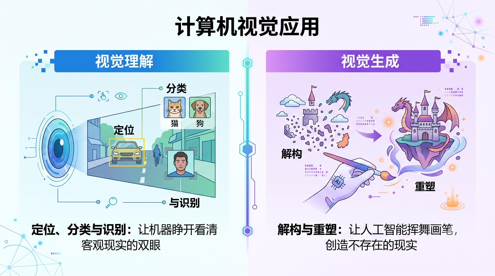
21 / 人脸识别
识别身份有两种常见操作：从多人中找人，或核对两张脸是否属于同一人。
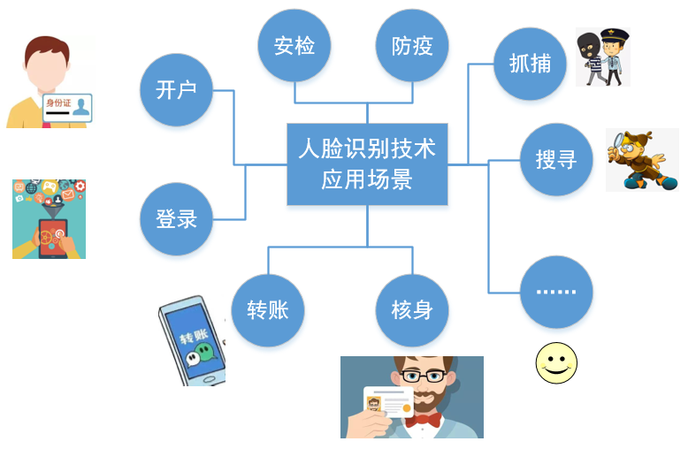
输入一张待查人脸，在登记库的 N 人中搜索，返回按相似度排序的候选。
校园无卡门禁：学生无需刷卡或报学号，系统在获准人员库中寻找匹配身份，再决定是否开门。
身份已经给定，只把现场照片与指定一人的登记照片比较，判断是否属于同一人。
机场持证核验：旅客先出示证件，通道核对现场人脸与证件人脸，既要防止错放他人，也要减少错拦本人。
NIST 将自动人脸辨识描述为搜索候选；只与指定一人比较时，称为核验。定义参考
21 / 人脸识别
从整张照片到身份判断，系统需要逐步缩小无关变化。
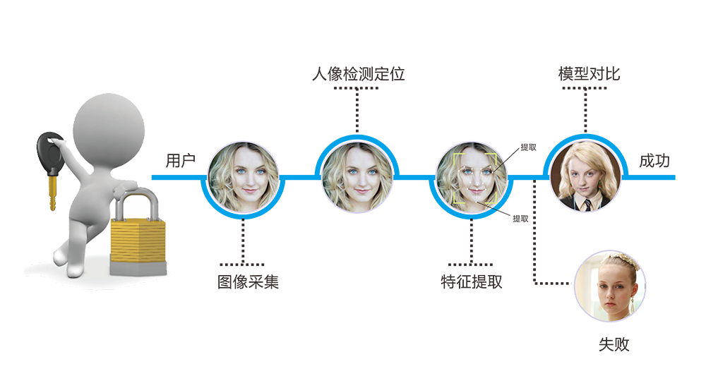
21 / 人脸识别 · 视觉识别
人感知面孔的轮廓和五官；计算机接收亮度与颜色组成的像素矩阵，需要从样本中学习可比较的身份特征。
视觉加工：人眼接收到视觉信号后，枕叶参与图像处理；梭状回附近的面孔相关脑区参与面孔辨识。这是多个区域协作的过程。
经验塑造辨脸能力：研究发现，约 6 个月大的婴儿能够区分不同猴子的面孔；随着成长和接触经验增加，人更擅长区分熟悉类别的面孔，这与“异族效应”有关。
脸盲症：面孔加工通路受损或功能异常时，可能难以认出熟人；严重者要借助发型、衣着等线索。
输入是像素矩阵：每个位置只有亮度或颜色数值。
局部像素很混乱，必须从大量样本中学习稳定模式。
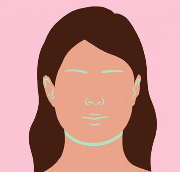
21 / 人脸识别
深度学习出现以前，研究者常先设计可比较的面部特征。
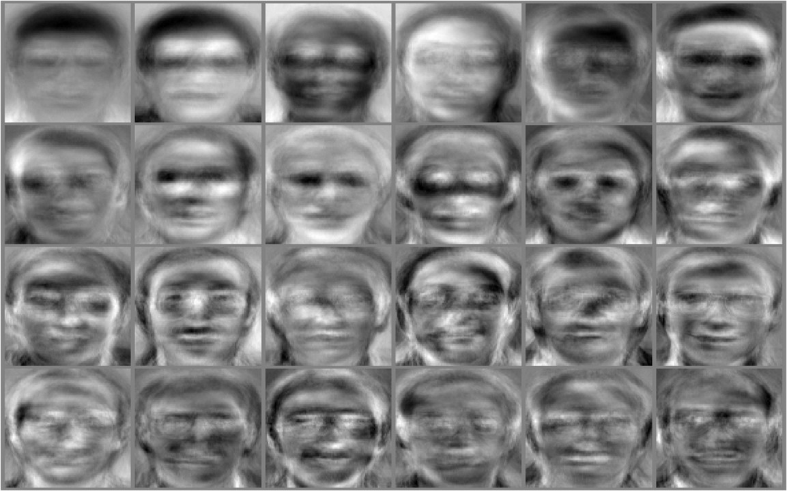
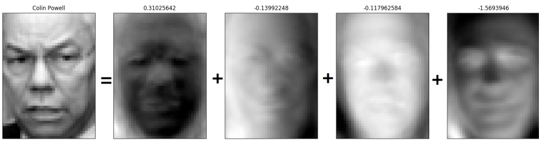
21 / 人脸识别
卷积网络从数据中学习特征，不必预先规定每个眼角或鼻梁的测量方法。
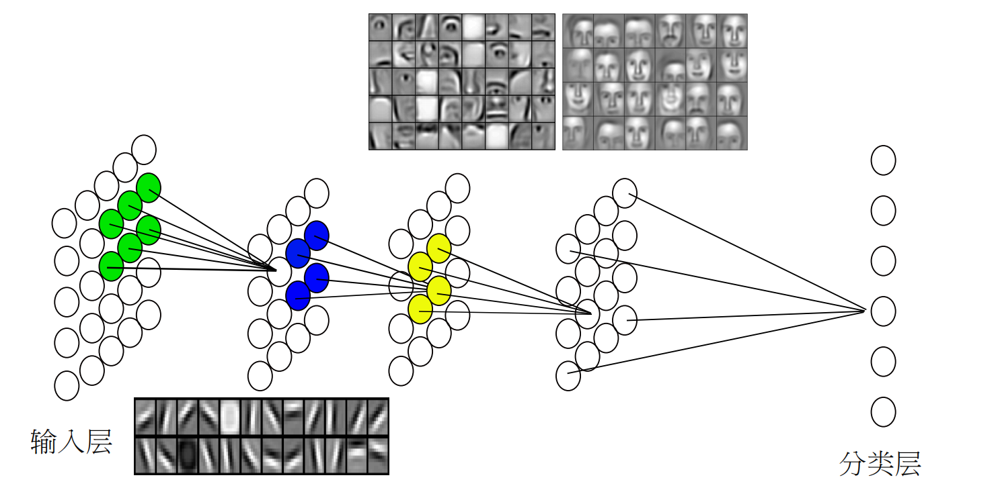
21 / 人脸识别
网络输出人脸嵌入向量，把“认脸”转成数字比较。
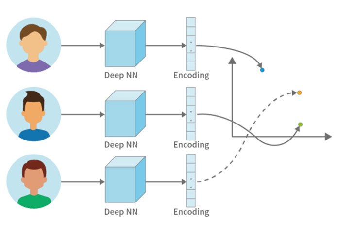
21 / 人脸识别 · 1:1 核验评估
出入境人脸核验将旅客现场照与证件照做 1:1 比对。先看两种错误，再以 NIST 的实际结果比较算法。
FMR · 误匹配率不同人的照片越过相似度门槛，被错当成同一人的比例。
FNMR · 漏匹配率同一人的照片低于门槛，被错当成不同人的比例。
NIST 的 VISABORDER 是签证照与口岸照核验。本页比较「VISA Yaw≥45 → BORDER°」列：两算法均设 FMR＝10⁻⁶，再看 FNMR。
| 算法 | NIST 表中 FNMR | 约错拒 |
|---|---|---|
| viante-003 | 0.0027 | 27 次 |
| sensetime-011 | 0.0079 | 79 次 |
同一 FMR 门槛下，后者每万次本人比对约多错拒 52 次。这是评测比例的换算，不是机场实际运行的拒绝人数。
22 / 车牌识别
停车场出口和道路抓拍需要从车辆画面中读出牌号。
22 / 车牌识别
真实道路远比清晰、正面的车牌照片复杂。
22 / 车牌识别
系统先在复杂背景中找车牌，再把车牌区域转成字符串。
22 / 车牌识别
一张图片进入网络，模型同时预测物体在哪里、属于哪一类。
22 / 车牌识别
车牌检测只需预测一类目标：车牌。
22 / 车牌识别
车牌框确定后，还需把图像变成正确的号码。
22 / 车牌识别 · 效果评估
停车场要读对整串牌号，也要及时放行；用公开的 CCPD 测试集，把定位、识字和速度分开看。
同一个模型可以“框得准却读错字”，因此定位准确率不能代替整串识别率。
研究者用停车场车牌照片训练模型，另留出 10 万张照片作基础测试；再单独用雨、雪、雾天气拍摄的照片测试。两组都要求车牌定位正确、整串字符全对。
| 方法 | 基础测试 | 雨雪雾 | FPS |
|---|---|---|---|
| SSD300 + HC | 98.3% | 87.3% | 35 |
| RPnet | 98.5% | 87.9% | 61 |
RPnet 在基础测试中每 100 张约错 1.5 张；遇到雨雪雾，每 100 张约错 12.1 张。拍摄条件改变，识别效果会明显下降。
这些是 CCPD 论文测试结果，不是任一停车场的实测放行率；还应按夜间、反光、斜拍和新号牌分别测。
研究来源：CCPD 论文·表 5（2018） · 公开数据与协议
23 / AI美颜
自动上妆要改变妆容，同时保留原来的人。
23 / AI美颜
生成器制作图像，判别器判断图像是否像真实样本。
23 / AI美颜
进一步的编辑把“是谁”和“外观如何”分开表示。
23 / AI美颜 · 效果评估
上妆照要像参考妆容，也要仍然像本人；单看“照片好看”或一个分数，都容易漏掉问题。
这些是研究中的评测办法；目前没有人脸核验 NIST FRTE 那样的统一官方榜单。
BeautyREC 论文（2023）在 Wild 测试集中比较换妆方法；下表为原照与结果的身份相似度和图像分布距离。
| 方法 | ArcFace ↑ | FID ↓ |
|---|---|---|
| SSAT | 0.831 | 34.96 |
| BeautyREC | 0.883 | 24.00 |
同一论文的另一项受试者盲评把妆容匹配、身份与真实感一起比较：SSAT 获首选 22.0%，BeautyREC 为 47.5%。盲评与上表的测试样本范围不同，不能混作同一指标。
关键陷阱：直接复制原照也能保住身份，却没有完成换妆。评价必须同时看“变了什么”和“保住什么”。
24 / AI绘画大师
内容描述画了什么，风格描述用怎样的颜色、纹理与笔触来画。
24 / AI绘画大师 · 图像生成
同一张小城照片作内容图，分别借用不同绘画作品的颜色和纹理；风格变了，小城的房屋和河岸仍应可辨。
经典神经风格迁移同时计算内容差异与风格差异，反复调整生成图，使场景结构接近原图、纹理统计接近参考画作。也可按比例混合两种风格。
隐藏画案例展示另一种用途：X 光揭示被覆盖画面的形状，研究者再借相近年代画作的风格尝试上色。生成的颜色是推测性的呈现，不能当作原画真实色彩。
近期进展：2026 年 StyleGallery 按画面对象对应参考图区域，减少画风错贴到不相干物体。论文同一测试集上 ArtFID 为 24.536，所比较的 Attention Distillation 为 26.207；分数越低越好。
研究参考：神经风格迁移（2015） · 隐藏画（2021） · StyleGallery（2026）
24 / AI绘画大师 · 效果评估
同一内容图配不同画风时，作品既要保住原场景，也要接近参考风格；一项分数无法说明两者是否兼得。
公开研究常用 MS-COCO 照片作内容图、WikiArt 作风格图；这属于研究协议，不是统一的官方考试。
CVPR 2024 研究取 20 张 MS-COCO 内容图 × 40 张 WikiArt 风格图，得到 800 张生成图；下表取论文表 1 的两种方法。
| 方法 | LPIPS ↓ | FID ↓ | ArtFID ↓ |
|---|---|---|---|
| AdaIN | 0.6076 | 18.242 | 30.933 |
| Style Injection | 0.5055 | 18.131 | 28.801 |
这组条件下，Style Injection 的内容距离和风格分布距离都更低；ArtFID 也更低。数值只适用于这套图像与处理设置。
看“图宾根小城”时仍要检查房屋、河岸有没有变形；自动指标不能替代对画面局部的观察。
研究来源：ArtFID（2022） · CVPR 2024·表 1
25 / AI鉴伪
能够识别人脸，也意味着系统可能受到伪造或冒用。
25 / AI鉴伪 · 图像鉴伪
三张看似真实的人脸，可能只有一张来自相机。先看深度模型怎样造脸、换脸，才能理解鉴伪为何困难。
影视制作可用合成面孔，冒充他人的视频却可能误导观众或侵害权益。鉴伪要判断画面是否经过合成或换脸，还要弄清可疑片段来自何处；仅凭一张截图可能不足以判断整段视频。
Deepfakes 的示例让多人共用一个编码器，学习表情、口形等可迁移信息；每个人再用自己的解码器重建面容。把 A 的动作交给 B 的解码器，就能得到带有 B 面貌的合成画面。
换脸的关键不是简单贴一张脸，而是同时保留动作、表情与目标人物外观。压缩、转发和重拍还会抹平伪造痕迹，使肉眼判断和自动检测都变难。
25 / AI鉴伪 · 图像鉴伪
从看眼部和光照等局部异常，到检测整张图与整段视频的统计痕迹：造假越逼真，鉴伪越要经得起新方法和转发压缩。
早期检测者利用双眼反光、细节缺损等线索区分合成图与相机图；这些线索解释了为什么看似自然的脸仍可能露馅，却不能作为永远有效的真假规则。
先收集真实与伪造样本，训练模型识别纹理、光照、运动或压缩后的异常，再在未见过的生成器与数据来源上测试。GenD（2026）特别用配对视频训练，减轻模型只记住拍摄来源的问题。
影视与教育中的授权生成有价值，冒用身份则可能造成社会风险。鉴伪结果应结合原始文件、内容来源记录和人工复核；新生成器、声音换造与跨平台传播仍会改变检测难度。
研究参考：相关工作
25 / AI鉴伪 · 效果评估
转发的视频可能经过压缩、裁剪或换脸。鉴伪既要找出伪造，也不能把真实视频随意判假。
检测分数只能提供线索；判断视频来源还需原文件、传播记录和人工核查。
WACV 2026 的 GenD 只微调预训练视觉模型中少量参数，训练时配对同一原视频的真实帧和伪造帧，减少模型记住拍摄来源的捷径。
研究在 14 个跨数据集测试中比较检测器，报告 GenD 的平均跨集视频 AUROC 约 91%。这说明训练与测试来源分开时仍可检出许多伪造，但并不代表任意新生成器或平台转发视频都能达到此值。
实际系统应按生成方式、压缩程度和拍摄设备分别复测，并记录误报与漏检。
研究来源：NIST OpenMFC · GenD · WACV 2026
26 / 语音识别
26 / 语音识别

26 / 语音识别
同一段真实录音：上图看振幅，下图看频率随时间的变化。
/s/：气流摩擦形成的非周期噪声，高频较明显；/uː/、/iː/：声带振动，能看到较有规律的声学结构。点击图中任意时间可定位。
26 / 语音识别
26 / 语音识别
26 / 语音识别
26 / 语音识别 · 效果评估
录完再转写适合文件处理；课堂字幕和语音交互需要连续接收声音，在一句话没说完时就开始输出。
Qwen3-ASR 也支持流式推理。模型能力与演示接口要分开看：说完前是否已经出字，才能体现当前系统的流式行为。
公开模型卡用同一套 WenetSpeech 会议录音比较不同分块方式；下列为字错误率 CER，越低越好。
| 处理方式 | CER ↓ |
|---|---|
| 流式 · 160 ms 块 | 12.04% |
| 流式 · 960 ms 块 | 8.84% |
| 离线 · 整段处理 | 7.20% |
更长的块能看到更多语音，但须多等一会儿。这是项目报告的准确率—延迟取舍，不表示所有场景的最佳模型。
原演示地址。在线演示需联网并允许麦克风；声音交由演示服务处理。
27 / 声纹识别
27 / 声纹识别
27 / 声纹识别 · 效果评估
同一个人换一句话，声音表示仍应接近；两个人读同一句话，系统仍要区分身份。
ModelScope 备用入口；在线演示会处理上传的录音。
声谱 → 二维频时特征 ↔ 一维序列特征 → 汇聚 → 说话人向量。通过改变特征排列，让两种处理方式交换信息；新增时间池化，压缩时间长度，让增加通道数的计算代价更小。
论文的最大配置有 1,230 万参数；在 VoxCeleb1-O 说话人核验测试上，报告 EER 0.287%。这是指定录音对和测试协议下的研究成绩，不是任意电话的误接受概率。
WeSpeaker 已集成 ReDimNet2，可复现这类模型。左边的在线演示用于观察“录音对 → 向量 → 相似度”的过程，其部署版本不等同本页论文配置。
当前研究还在处理短录音、跨设备、重叠说话和不确定性；合成语音防伪须另测，声纹比对不能代替活体检测。
研究来源：NIST SRE · ReDimNet2 · 2026 · WeSpeaker · 代码与模型
28 / 语音合成
语音合成通常指从文本生成声音，也称为文本到语音转换（Text-to-Speech，TTS）。
它广泛应用于人机会话、自动播报和地图导航等场景。
28 / 语音合成
设计声门、声道参数，用声源与声道模型合成语音。早期系统如 DECtalk，声音较机械。
录制大量真人语音片段，合成时检索并拼接。自然度提升，同时需要较大的语料库。
从文本学习预测频谱，再生成波形，如 Tacotron。模型从数据学习发音、连读和语调。
从“机器声”到自然语音
28 / 语音合成
28 / 语音合成 · 效果评估
导航要清楚，讲故事要有情绪；现代语音合成不仅生成声音，还要控制读音、节奏和表达方式。
选择预设说话人（CustomVoice），无需上传参考录音；在线服务可能排队。
文字＋音色／风格 → 双轨语言模型 → 离散语音码 → 波形解码器 → 声音。12Hz 版本用多码本表示声音，并用因果卷积解码器逐块还原波形，支持流式生成。
与 F5-TTS 的流匹配路线不同，它把合成组织成语音码预测。论文在 Seed-TTS 英文测试中报告以下转写词错误率，衡量生成内容是否读对：
| 模型 | WER ↓ |
|---|---|
| F5-TTS | 1.83% |
| CosyVoice 3 | 1.45% |
| Qwen3-TTS 12Hz 1.7B Base | 1.24% |
这是论文的零样本生成测试；左侧预设音色演示并非同一评测配置。读得准之外，还需单独听评自然度与情绪控制。
研究来源：Qwen3-TTS · 2026 技术报告 · Qwen3-TTS · 开源工程 · F5-TTS · ACL 2025
29 / AI写作
大语言模型通过预测下一个词元学习语言，支持问答、翻译和写作等任务。
29 / AI写作
29 / AI写作
29 / 机器作家 · 效果评估
续写故事不仅要句子通顺，还要记住人物、时间和已经发生的事。
语言模型的下一个词预测能力不自动保证整篇故事一致。
ConStory-Bench（ACL 2026）建立 2,000 个提示，把长篇叙事中的事实、时间等不一致分成多类，并要求检测器找到支持判断的文本位置。
研究发现，事实和时间相关的矛盾尤其常见，故事中段也容易出现问题。它让“写得好”从笼统印象变成可查证的编辑问题。
课堂可让同学先读故事，再核对人物表和时间线，对照模型指出的证据。
30 / 人工智能诗人 · 语言生成
诗歌既有字数、韵脚和平仄等可检验的形式，也有连贯意象与情感；满足前者并不自动得到好诗。
看图作诗要从画面提取对象、场景和氛围，再用符合诗体的语言表达。以七言绝句为例，四句共 28 字，还要顾及押韵与节奏。
选字满足格律，机器可以很快；《早发白帝城》说明字数、韵脚、平仄与语句通顺各是不同条件。评价生成诗也要分别看这些层面。
机械凑出 28 个字不难，难的是主题不断裂、意象有联系、语言不落俗套。押韵分数不能代替人的审美判断。
30 / 人工智能诗人 · 语言生成
从把已有诗句打碎重组，到统计常见字词，再到神经网络根据主题或图片生成；方法变了，形式和意境仍需一起看。
早期拼贴法重组诗句；统计法利用“春—花”“山—水”等共现关系。图中把含“春”“花”的句子并排展示：用词相近，不等于整首诗意象连贯。神经模型进一步学习字词表示与前后搭配。
看图作诗先从图片提取关键词及视觉特征，再生成诗句。BIPro（2025）让模型针对格律和表达问题多轮修订，在论文的人类评价中，修订后的传统中文诗更受偏好。
同一幅画可以写出多首合理诗，难以用单一标准答案打分；文化典故、原创性和整体意境仍需人工评价。
研究参考：相关工作
30 / 人工智能诗人 · 效果评估
格律可以逐项核对；意象是否贴合主题、表达是否有新意，还要结合读者判断。
目前没有能替代文学判断的统一分数；自动评测更适合辅助筛查具体问题。
BIPro（ACL 2025）让模型先生成诗，再按形式和表达问题多轮修订，而不是一次写完就交卷。
论文的人类评价更偏好这种迭代修订的传统中文诗，说明“检查并改写”能改善作品；评价仍依赖具体题目、参评模型与读者。
2026 年 Honglou-Poem 进一步建立与《红楼梦》相关的诗歌评测，尝试把叙事场景与诗意的符合程度纳入评价。它评的是“怎样判断好坏”，不是新的统一诗歌分数。
31 / 机器翻译
31 / 机器翻译
31 / 机器翻译 · 效果评估
讲座还在继续，听众已经需要看到译文：机器不能等整段话说完才开始翻译。
2023 · SeamlessStreaming：让模型根据已听到的内容判断何时输出下一段译文，并支持语音到文字或语音的实时翻译。
2025 · SimulStreaming：把语音识别与翻译模型接起来，用增量输出策略处理较长讲话；其开源实现面向 GPU。
2026 · IWSLT 评测：以长语音测试英语到中文等方向，同时衡量译文质量与延迟；同声翻译不能只比一个准确率。
本地演示采用 X-ASR → Hy-MT2 的级联结构，展示“先出临时译文、再定稿”。它不等同于上述端到端语音翻译模型，也未测得竞赛级延迟。
研究来源：SeamlessStreaming · Meta 2023 · SimulStreaming · 开源项目 · IWSLT 2026 同声翻译评测 · Hy-MT2 · 开源翻译模型
32 / 围棋国手
技术基础：深度学习与强化学习
32 / 围棋国手
32 / 围棋国手
32 / 围棋国手
32 / 围棋国手
32 / 围棋国手
32 / 围棋国手 · 效果评估
一手棋的好坏要经过整盘对弈检验；单看程序预测下一手像不像人类棋谱，不足以判断棋力。
报告“击败某对手”时，要写清对手版本和比赛规则。
2026 年 RGSC 研究让自我对弈更关注高遗憾值局面，以便把训练计算集中在更能改变策略的关键步骤。
在论文的 9×9 围棋、KataGo 对手实验中，某一已训练模型的胜率从 69.3% 提高到 78.2%。这表明训练局面选择有用，但不应把小棋盘成绩写成职业棋手比赛成绩。
下一步还要比较不同棋盘、不同计算预算和不同对手。
研究来源：RGSC · 2026
33 / AI游戏
33 / AI游戏
33 / AI游戏
33 / AI游戏 · 效果评估
打砖块和复杂多人游戏都靠观察、行动与奖励学习；不同游戏的原始得分不能直接相加。
游戏中安全试错与现实机器人试错的代价不同，不能直接外推。
DreamerV3（《Nature》2025）从游戏观察中学习世界模型，在模型内部预测行动后可能发生什么，再训练策略；同一套方法用于 Atari、Minecraft 和机器人等多类任务。
它的意义是跨任务复用训练方法，而不只是为某一款游戏调出最高分。比较成绩仍须使用相同的环境版本和交互预算。
未来重点是更少真实交互、更可靠的跨任务迁移，以及遇到未知规则时能否恢复。
34 / 扫地机器人
34 / 扫地机器人
34 / 扫地机器人
34 / 扫地机器人
34 / 扫地机器人
34 / 扫地机器人
34 / 扫地机器人
34 / 扫地机器人
34 / 扫地机器人 · 机器人行动
让扫地机器人清洁陌生房间，难点不只是会走，还要知道扫过哪里、哪里有家具，以及如何回到充电座。
家庭里地面与障碍会变化。早期扫地机碰到桌脚就随机转向，能工作却容易重复清扫或漏掉角落；面积越大，低效率越明显。
后来的机器用激光测距或摄像头感知周围，逐渐建立可供导航的地图。有了环境信息，才能从漫无目的碰撞转向有计划地覆盖。
家具移动、电线和宠物会改变通道。若位置估计偏了，即使路线图看似完整，也可能漏扫、反复扫或被困住。
34 / 扫地机器人 · 机器人行动
SLAM 让机器人一边探索一边估计位置与地图；路径规划再决定下一块地面该怎样覆盖。
机器人刚进入房间时没有地图：传感器先看到局部障碍，移动后继续观察，把新区域接到已有地图上，同时不断修正“我在哪里”。
随机路线和规划路线的区别不只是画得整齐。规划器可以减少重复、绕开障碍并安排回充；2025 年一项 20×20 网格仿真在动态障碍场景报告 98.25% 覆盖率。
家庭环境比网格仿真复杂：镜面、低矮物体、宠物与临时障碍会造成感知误差。覆盖率之外还要看重复清扫、耗时、卡困和恢复能力。
研究参考：相关工作
34 / 扫地机器人 · 效果评估
一条漂亮路线不等于地面被扫干净；覆盖范围、重复行走和避障要一起看。
仿真地图中的覆盖率只说明规划效果，不能当作真实家庭清洁率。
2025 年一项自适应覆盖路径研究让机器人在动态障碍出现时调整路线，在 20×20 网格仿真中报告覆盖率最高 98.25%、重叠率 3.06%。
当障碍移动更快，论文结果变为覆盖率 96.52%、重叠率 11.2%。这说明同一方法在更难条件下也会退步。
真正的扫地机还要面对地毯、电线、宠物与灰尘，不能把仿真数字当作家用效果。
研究来源：动态环境覆盖路径 · 2025
35 / 搜索引擎 · 信息检索
搜索“谷歌地图”时，若把全网网页一篇篇读过才回答，就太慢了；倒排索引先建好“词在哪些文档里”的清单。
学生找一篇资料，系统需在海量网页中迅速给出候选。1990 年 Archie 搜索 FTP 资源，后来出现网页搜索；网页规模增长使预先建索引成为关键。
离线时，为“谷歌”“地图”等词记录包含它们的网页；查询时分别取出清单，找交集得到候选。图中的表说明为什么不必每次从头扫描所有网页。
查到含关键词的网页还不等于找到答案：词可能只偶然出现，页面也可能过时或不可靠。因此搜索还必须排序。
35 / 搜索引擎 · 信息检索
索引解决“找得到”，排序解决“先给谁看”。只数关键词次数或链接数量，都可能把不合适的页面排到前面。
标题是否包含查询词、词在正文的位置，都能提供线索。PageRank 还利用网页之间的超链接：重要网页的一条指向，比普通网页的一条指向更有分量。
从相同初始分数出发，页面把一部分重要性传给它链接的页面，反复更新直到稳定。现代系统再结合关键词、语义和重排；TREC 2025 一项提交的 nDCG@30 为 0.6934。
重要网页未必回答当前问题，链接也可能被操纵。评测必须同时看相关性、来源可信度和查询时效，不能只看一次排名分数。
研究参考：相关工作
36 / 商品推荐 · 个性化推荐
搜索要用户先提问题；推荐则根据用户过去的行为，主动选择可能感兴趣的商品或内容。
网店首页展示的少量商品要从海量候选里选出来。买过手机的人可能想看耳机，这是商品相似；即使两人没买同样的东西，相近的购买习惯也可提供线索。
A、B 买过相似的 T 恤、裤子和帽子；A 新买皮鞋后，系统可能把皮鞋推荐给 B。这是协同过滤：利用群体行为，而非只比商品外观。
点击不等于喜欢，送礼也不等于本人偏好。新用户和新商品缺少记录，系统若只重复旧兴趣，还会缩窄用户看到的选择。
36 / 商品推荐 · 个性化推荐
把商品与用户表示为可学习的向量，推荐就能比较多种商品和行为的关系，而不必手写每一条搭配规则。
同一用户买过的高跟鞋和裙子可被视为有关联，训练时让它们的向量更接近；图中的同类商品因此可能聚在一起。接近表示训练目标下的行为关联，不等于价格或外观相同。
神经推荐模型把用户历史与商品表示结合来排序。GRACE（2025）利用连续浏览过程，在论文的 Home 商品数据上，nDCG@10 相对所比基线最多提高 106.7%。
推荐可节省搜索时间，也会带来隐私、差别定价和信息茧房问题。好的评估除点击或排序分数，还需关注多样性、新商品机会与用户选择权。
研究参考：相关工作